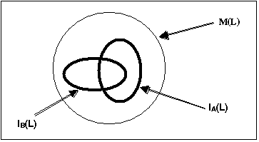
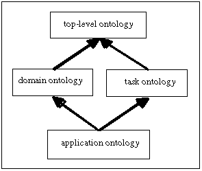

1 Scope
The model of agent communication in FIPA is based on the assumption that two agents, who wish to converse, share a common ontology for the domain of discourse. It ensures that the agents ascribe the same meaning to the symbols used in the message. For a given domain, designers may decide to use ontologies that are explicit, declaratively represented (and stored somewhere) or, alternatively, ontologies that are implicitly encoded with the actual software implementation of the agent themselves and thus are not formally published to an ontology service.
This Part of FIPA 98 specifications deals with technologies enabling agents to manage explicit, declaratively represented ontologies. An ontology service for a community of agents is specified for this purpose. It is required that the service be provided by a dedicated agent, hereafter called Ontology Agent (OA), whose role in the community is to provide some or all of the following services:
- discovery of public ontologies in order to access them;
- maintain (e.g. register with the DF, upload, download, and modify) a set of public ontologies;
- translate expressions between different ontologies and/or different content languages;
- respond to query for relationships between terms or between ontologies;
- facilitate the identification of a shared ontology for communication between two agents.
This specification deals only with the communicative interface to such a service while internal implementation and capabilities are left to developers. It is not mandated that every OA be able to execute all those tasks (e.g. translation between ontologies, and identification of a shared ontology are in general very difficult and not always possible to realize), but every OA must be able to participate into a communication about these tasks (possibly responding that it is not able to execute the translation task). The interface is specified at the agent communication level [1,2] as opposed to a computational API. Therefore, the specification defines the interaction protocols, the communicative acts and, in general, the vocabulary that agents must adopt when using this service.
The specification enables developers to build:
- agents that access such a service,
- agents that provide it,
- agents able to negotiate at run-time a shared ontology for communication.
The application of this specification does not prevent the existence of agents that, for a given domain, use ontologies implicitly encoded with the implementation of the agents themselves. In these cases full agent communication and understanding can still be obtained, however the services provided by the OA cannot apply to implicit encoded ontologies.
It is not intention of this document to mandate that every FIPA Agent Platform must include an Ontology Agent. However, in order to promote interoperability, if one OA exists, then it must comply with these specification. And, if the services here described are required by a specific agent platform implementation, then they must be implemented in compliance with this specification.
In order to keep the applicability of the specification as unrestricted as possible, the approach used is platform independent. In particular, this specification does not mandate the storage format of ontologies but only the way agents access an ontology service. However, in order to specify the service, an explicit representation formalism has been specified. It is the FIPA Knowledge Model, identified by the name Fipa-meta-ontology, that allows communication of knowledge between agents. As far as possible, care has been taken to integrate existing formalisms, such as RDF [5] and OKBC [3].
2 Normative reference(s)
The following normative documents contain provisions which, through reference in this text, constitute provisions of this specification. For dated references, subsequent amendments to, or revisions of, any of these publications do not apply. However, parties to agreements based on this specification are encouraged to investigate the possibility of applying the most recent editions of the normative documents indicated below. For undated references, the latest edition of the normative document referred to applies. Members of ISO and IEC maintain registers of currently valid specifications, term(s) and definition(s).
FIPA 1998. FIPA 97 specification – Part 1: Agent Management – version 2.0, October 1998.
FIPA 1998. FIPA 97 specification – Part 2: Agent Communication Language – version 2.0, October 1998.
Vinay K. Chaudhri Artificial Intelligence Center SRI InternationalAdam Farquhar Knowledge Systems Laboratory Stanford UniversityRichard Fikes Knowledge Systems Laboratory Stanford UniversityPeter D. Karp Artificial Intelligence Center SRI InternationalJames P. Rice Knowledge Systems Laboratory Stanford University. Open Knowledge Base Connectivity 2.0.4 - April 9, 1998. Chapter 2 – Knowledge Model.
3 Terms and definitions
For the purposes of this specification, the following terms and definitions apply:
Action
A basic construct which represents some activity which an agent may perform. A special class of actions is the communicative acts.
Agent
An Agent is the fundamental actor in a domain. It combines one or more service capabilities into a unified and integrated execution model which can include access to external software, human users and communication facilities.
Agent cloning
The process by which an agent creates a copy of itself on an agent platform.
Agent code
The set of instructions used by an agent.
Agent Communication Language (ACL)
A language with precisely defined syntax, semantics and pragmatics that is the basis of communication between independently designed and developed software agents. ACL is the primary subject of the FIPA 97 specification, part 2.
Agent Communication Channel (ACC)
The Agent Communication Channel is an agent which uses information provided by the Agent Management System to route messages between agents within the platform and to agents resident on other platforms.
Agent data
Any data associated with an agent.
Agent invocation
The process by which an agent can create another instance of an agent on an agent platform.
Agent Management System (AMS)
The Agent Management System is an agent which manages the creation, deletion, suspension, resumption, authentication and migration of agents on the agent platform and provides a “white pages” directory service for all agents resident on an agent platform. It stores the mapping between globally unique agent names (or GUID) and local transport addresses used by the platform.
Agent Platform
An Agent Platform provides an infrastructure in which agents can be deployed. An agent must be registered on a platform in order to interact with other agents on that platform or indeed other platforms. An AP consists of three capability sets ACC, AMS and default Directory Facilitator.
Agent Platform Security Manager (APSM)
An Agent Platform Security Manager is responsible for maintaining the agent platform security policy. The APSM is responsible for providing transport-level security and creating agent audit logs. The APSM negotiates the requested intra- and inter-domain security services of other APSM's in concert with the implemented distributed computing architectures, such as CORBA, COM, DCE, on behalf of an agent in its domain.
ARB Agent
An agent which provides the Agent Resource Broker (ARB) service. There must be at least one such an agent in each Agent Platform in order to allow the sharing of non-agent services.
Communicative Act
A special class of actions that correspond to the basic building blocks of dialogue between agents. A communicative act has a well-defined, declarative meaning independent of the content of any given act. CAs are modelled on speech act theory. Pragmatically, CAs are performed by an agent sending a message to another agent, using the message format described in FIPA97, part 2.
Content
That part of a communicative act which represents the domain dependent component of the communication. Note that "the content of a message" does not refer to "everything within the message, including the delimiters", as it does in some languages, but rather specifically to the domain specific component. In the ACL semantic model, a content expression may be composed from propositions, actions or IRE's.
Content Language
The content of a FIPA message refers to whatever the communicative act applies to. If, in general terms, the communicative act is considered as a sentence, the content is the grammatical object of the sentence. This content can be encoded in any language, the content language, denoted by the :language parameter of the communicative act.
Conversation
An ongoing sequence of communicative acts exchanged between two (or more) agents relating to some ongoing topic of discourse. A conversation may (perhaps implicitly) accumulate context that is used to determine the meaning of later messages in the conversation.
CORBA
Common Object Request Broker Architecture, an established standard allowing object-oriented distributed systems to communicate through the remote invocation of object methods.
Directory Facilitator
The Directory Facilitator [1] is an agent that provides a “yellow pages” directory service for the agents. It stores descriptions of the agents and the services they offer.
Explicit & Implicit
An ontology is explicit when it is specified in declarative form as a set of axioms and definitions (e.g. as a set of Ontolingua statements) that an agent can refer to (e.g. by means of an OKBC interface). An ontology is implicit, when the assumptions on the meaning of its vocabulary are only implicitly embedded in some piece of software.
Feasibility Precondition (FP)
The conditions (i.e. one or more propositions) which need be true before an agent can (plan to) execute an action.
Knowledge model
It is a specification of the set of primitives used by a certain class of representation languages. As such, a knowledge model can be considered as a meta-ontology. For instance, several ontology servers use an object oriented model of knowledge based on primitive notions like classes, frames, properties, constraints, axioms and functions. FIPA adopts for the specification of these notions the OKBC version 2.0.4 Knowledge Model, which is called FIPA-meta-ontology or FIPA knowledge model.
Illocutionary effect
See speech act theory.
Knowledge Querying and Manipulation Language (KQML)
A de facto (but widely used) specification of a language for inter-agent communication. In practice, several implementations and variations exist.
Local Agent Platform
The Local Agent Platform is the AP to which an agent is attached and which represents an ultimate destination for messages directed to that agent.
Message
An individual unit of communication between two or more agents. A message corresponds to a communicative act, in the sense that a message encodes the communicative act for reliable transmission between agents. Note that communicative acts can be recursively composed, so while the outermost act is directly encoded by the message, taken as a whole a given message may represent multiple individual communicative acts.
Message content
See content.
Message transport service
The message transport service is an abstract service provided by the agent management platform to which the agent is (currently) attached. The message transport service provides for the reliable and timely delivery of messages to their destination agents, and also provides a mapping from agent logical names to physical transport addresses.
Meta-ontology
For allowing a FIPA agent to communicate through ACL messages aboutontologies, it is necessary to describe the concepts used to speak about anontology. This description is called the meta-ontology. It is an ontologyitself as it provides the ontology to refer to another ontology. Therefore,the meta-ontology should be powerful enough to deal with all potentiallyavailable ontologies and make explicit, at least informally, these concepts.
Mobile agent
An agent that is not reliant upon the agent platform where it began executing and can subsequently transport itself between agent platforms.
Mobility
The property or characteristic of an agent that allows it to travel between agent platforms.
Ontology
An ontology is an explicit specification of the structure of a certain domain (e.g. e-commerce, sport, …). For the practical goals of FIPA (that is enabling development and deployment of inter-operable agent-based applications), this includes a vocabulary (i.e. a list of logical constants and predicate symbols) for referring to the subject area, and a set of logical statements expressing the constraints existing in the domain and restricting the interpretation of the vocabulary. Ontologies therefore provide a vocabulary for representing and communicating knowledge about some topic and a set of relationships and properties that hold for the entities denoted by that vocabulary.
Ontology Agent
An agent that provides the Ontology Service specified in this specification. The main objective of the Ontology Agent is to offer to FIPA agents a unified view of the services offered by the different ontology servers. Its second objective is to allow an ontology server to be known by FIPA agents. Moreover some ontology agents can provide the agents with services such as translation facilities. Like any other FIPA agent, the ontology agent has to be registered to the DF and to provide the DF with the published ontologies and available services.
Ontology Name
The ontologies referred to by the agents can be provided by different ontology servers. Consequently, these ontology names are constructed from: the OA name, and the ontology logical name (given by the ontology designer e.g. “car “).
Ontology Server
Provider of an Ontology Service, not necessarily in the FIPA domain, or FIPA-compliant. Examples of ontology servers already existing outside FIPA are: Ontolingua, XML/RDF ontology servers, ODL databases ontologies servers. Access to the services provided by these ontologies servers are based on various APIs such as the OKBC interface, the ODL interface or HTTP.
Ontology sharing problem
The problem of ensuring that two agents that wish to converse do, in fact, share a common ontology for the domain of discourse. Minimally, agents should be able to discover whether or not they share a mutual understanding of the domain constants.
Perlocutionary Effect
See speech act theory.
Personalization
An agent’s ability to take individual preferences and characteristics of users into account and adapt its behavior to these factors.
Proposition
A statement which can be either true or false. A closed proposition is one which contains no variables, other than those defined within the scope of a quantifier.
Protocol
A common pattern of conversations used to perform some generally useful task. The protocol is often used to facilitate a simplification of the computational machinery needed to support a given dialogue task between two agents. Throughout this document, we reserve protocol to refer to dialogue patterns between agents, and networking protocol to refer to underlying transport mechanisms such as TCP/IP.
Rational Effect (RE)
The rational effect of an action is a representation of the effect that an agent can expect to occur as a result of the action being performed. In particular, the rational effect of a communicative act is the perlocutionary effect an agent can expect the CA to have on a recipient agent. Note that the recipient is not bound to ensure that the expected effect comes about; indeed it may be impossible for it to do so. Thus an agent may use its knowledge of the rational effect in order to plan an action, but it is not entitled to believe that the rational effect necessarily holds having performed the act.
Software Service
An instantiation of a connection to a software system.
Software System
A software entity which is not conformant to the FIPA Agent Management specification.
Speech Act
The notion of a speech act is derived from the linguistic analysis of human communication. It is based on the idea that with language the speaker not only makes statements, but also performs actions, e.g. a request or an assertion. In this context, a verb denoting a speech act, is called a performative, since saying it makes it so. See FIPA97, part 2 for more details.
Speech Act Theory
A theory of communications which is used as the basis for ACL. Speech act theory is derived from the linguistic analysis of human communication. It is based on the idea that with language the speaker not only makes statements, but also performs actions. A speech act can be put in a stylised form that begins "I hereby request …" or "I hereby declare …". In this form the verb is called the performative, since saying it makes it so. Verbs that cannot be put into this form are not speech acts, for example "I hereby solve this equation" does not actually solve the equation.
Stationary agent
An agent that executes only upon the agent platform where it begins executing and is reliant upon it.
TCP/IP
A networking protocol used to establish connections and transmit data between hosts
User Agent
An agent which interacts with a human user.
User Dialog Management Service
An agent service in order for FIPA agents to interact with human users; by converting ACL into media/formats which human users can understand and vice versa, managing the communication channel between agents and users, and identifying users interacting with agents.
User ID
An identifier for a real user.
User Model
A user model contains assumptions about user preferences, capabilities, skills, knowledge, etc, which may be acquired by inductive processing based on observations about the user. User models normally contain knowledge bases which are directly manipulated and administered.
User Personalization Service
An agent service that offers abilities to support personalization, e.g. by maintaining user profiles or forming complex user models by learning from observations of user behavior.
Wrapper Agent
An agent which provides the FIPA-WRAPPER service to an agent domain on the Internet.
4 Symbols (and abbreviated terms)
|
ACC |
Agent Communication Channel |
|
ACL |
Agent Communication Language |
|
AMS |
Agent Management System |
|
API |
Application Programming Interface |
|
CA |
Communicative Act |
|
DB |
Data Base |
|
DF |
Directory Facilitator |
|
EBNF |
Extended Backus Naur Form |
|
FIPA |
Foundation for Intelligent Physical Agents |
|
GUID |
Global Unique Identifier |
|
HTTP |
Hyper-Text Transfer/Transmission Protocol |
|
IRE |
Identifying Referring Expression |
|
KBS |
Knowledge Base System |
|
KIF |
Knowledge Interchange Format |
|
OA |
Ontology Agent |
|
ODL |
Object Definition Language |
|
OKBC |
Open Knowledge Base Connectivity |
|
OQL |
Object Query Language |
|
RDF |
Resource Description Framework |
|
SL |
Semantic Language |
|
TCP/IP |
Transmission Control Protocol / Internet Protocol |
|
TKB |
Terminological Knowledge Base |
|
XML |
Extensible Markup Language |
5 Overview
An Ontology Agent (OA) is an agent that provides access to one or more ontology servers and that provides the ontology services, as specified in this specification, to an agent community. As well as all the other agents, the OA registers its service with the DF (see section 6.4) and it is identified by the keyword FIPA-OA for the value of :agent-type. It also registers the list of maintained ontologies and their translation capabilities in order to allow agents to query the DF (see section 6.4.1) for the specific OA that manages a specific ontology.
Every agent can then request the services of the OA by using the communicative interface specified in section 6. In particular, they can request to define, modify or remove terms and definitions of the ontology; they can request to translate expressions between two ontologies for which there exists a mapping; they can query for definitions, or relationships between terms or between ontologies; finally, they can request to find a shared ontology for communication with another agent. Even if any agent requests one of the above services, the OA reserves the right to refuse the request.
The realization of this communication obviously needs an agreement on the language to communicate facts about ontologies. This is described in section 6.2 where the subsumed knowledge model and the FIPA meta-ontology is specified. It describes the primitives, and normatively define their names, used in the communication, like concepts, attributes, relations, … It must be noticed that this specification is neutral in respect to the language used to store and represent the ontology (e.g. RDF, KIF, ODL, …), while it only specifies the language to communicate about ontologies.
Section 6.7 specifies the interaction protocol to be used by agents to agree on a shared ontology for communication.
The document concludes with two informative annexes. Annex A gives a clear definition of what is intended with the term ontology and, in particular, what is the difference between a conceptualization, an ontology, and a knowledge base. Annex B lists an informative set of guidelines to help developers to define well-founded new ontologies.
5.1 Rationale for having explicit ontologies
The FIPA communication model [2] is based on the assumption that communicating agents share an ontology of communication defining speech acts and protocols. In order to have fruitful communication, agents must also share an ontology of their domain of application. In an open environment, agents are designed around various ontologies (either implicit or explicit); for allowing their communication explicit ontologies are however necessary, together with a standard mechanism to access and refer to them (e.g., access protocol, naming space).
Without explicit ontologies, agents need to share intrinsically the same ontology to be able to communicate and this is a strong constraint in an open environment where agents, designed by different programmers or organizations, may enter into communication.
An explicit ontology is considered to be declaratively represented as opposed to implicitly, procedurally encoded. It can be then considered as “a referring knowledge” and, as a consequence, could be outside the communicating agents, managed by a dedicated ontology agent.
Figure 1 FIPA communication model
As better described in Annex A, in general, an ontology is not only a vocabulary, but also contains explicit axioms to approximate meaning, i.e. to constrain the set of intended models. Explicit axioms allow validation of specifications, unambiguous definition of vocabulary, automation of operations like classification and translation.
Several benefits can be envisioned by having explicitly represented ontologies, such as enabling querying for concepts, updating an ontology, reusing ontologies by extending or specializing existing ones, translation between different ontologies, sharing through referring to ontology names and locations, etc.
5.2 Possible benefits for applications
There are many applications that benefit from having a dedicated agent that manages and controls access to a set of explicit ontologies.
In information
retrieval applications, the size of some linguistic ontologies may prevent an
agent to store the ontology in its address space, so that agents need to
remotely access and refer to ontologies for disambiguation of user queries, for
using information about taxonomies of terms or thesaurus to enhance the quality
of retrieved results, etc. The definition of a standard interface to access and
query an ontology service can increase and simplify the interoperability
between different systems.
Semantic integration of heterogeneous information sources in an open and
dynamic environment, such as the Web or a digital library, may also benefit
from an ontology service. There are already implementations [6] that use one
domain ontology to integrate several information sources, managed by a
dedicated agent, still allowing each source to use its private ontology. Every
user can also have his own ontology depending on his preference, his role in
the domain, or simply his known language. Every used ontology is a subset of
the domain ontology or there exists a map between it and the domain ontology;
the knowledge about these relationships (subset and mapping) is usually
maintained by some ontology-dedicated agents.
Some applications use machine learning techniques to adaptively extend an ontology based on the interaction of the user with the system. In this case, at the execution time, several user agents may compete or collaborate to request to a dedicated agent to modify an ontology.
The development of this specification tried to take into account the requirements from all these kinds of applications. Hopefully, the specification should be general enough to allow even wider applicability.
5.3 Some sample scenarios illustrating offered features
5.3.1 Scenario 1 – Querying the OA for definition of terms
This scenario shows the usage of an Ontology Agent to access definition of terms when using large linguistic ontologies.
Let’s consider an agent B able to index pictures based on their captions and send them on a demand basis.
An agent A, which for instance is a user interface agent, is willing to get pictures of “diseased citrus” for its user, who is a “farmer” and wants to discover a diagnosis for his citrus trees. A, then, requests B, to send pictures of “diseased citrus” by referring to a given domain ontology, e.g. the “farmer” ontology.
B discovers that no pictures under the name “citrus” are available. Before sending the answer to A, B queries the appropriate OA (where the “farmer” ontology resides) to obtain sub-species of “citrus” (may be also sub-species of the “diseased” property) within the given ontology.
OA answers B that “oranges” and “lemon” are sub-species of “citrus”.
Then, B finds pictures of “diseased lemon” and “diseased orange” and sends them to the agent A.
The scenario might continue with the user, i.e. the farmer, looking at the several pictures and finding a match with the problem his trees have. Found the problem, may be he then asks the agent A to find for a diagnosis and a cure for it. Even in this case, the service provided by the OA might be useful again.
The existence of an explicit declarative ontology managed by an external agent, the OA, allows B to concentrate on its actual task, indexing and sending pictures, more than on the maintenance of the ontology itself. The agent B may also be more light-weighted as it is not necessary to encode in its code all the ontology but relations and definition of concepts can be accessed on demand by querying the OA.
Even the agent A may need to access the same OA, for instance to explain to its user the type of “diseased” is in the figure.
5.3.2 Scenario 2 – selecting a shared ontology
Agent_SP is the Service Provider for electronic commerce of a given merchant. It has simple behaviors referring to the “sell-products” ontology. It has other more complex behaviors referring to the “ sell-wholesale-products” ontology. The complex behaviors are designed as extensions of the simple ones. The “sell-wholesale-products” ontology is defined explicitly in an ontology server (e.g. Ontolingua) as an extension of the “sell-products” ontology.
The ontology server is accessible by agents of a given FIPA compliant platform through an Ontology Agent named OA1. Following the FIPA ontologies naming scheme, these two ontologies are named as follows: OA1@iiop://cnet.fr/sell-products and OA1@iiop://cnet.fr/sell-wholesale-product. Both of these ontologies refer to the electronic commerce domain.
Agent_SP would like to sell products. It makes a call for proposal using a CFP communicative act; the content of this communicative act refers to the OA1@iiop://cnet.fr/sell-wholesale-products ontology. Agent_C is a Customer. It has only simple behaviors referring to the OA1@iiop://cnet.fr/sell-products ontology. Agent-C does not know the OA1@iiop://cnet.fr/sell-wholesale-products ontology and as a consequence has no precise idea of the purpose of this Call-For-Proposals. However Agent_C believes that the Call-For-Proposals of Agent_SP is interesting to it, for instance because:
· it believes that all Call-For-Proposals from Agent_SP are interesting to it, or
· a third party agent knowing the needs of Agent_C and understanding this CFP has recommended Agent_C to answer this CFP, or
· it has behavior referring to the electronic commerce domain (that is at least the case in this example).
Following the Call-For-Proposals of Agent_SP, three different protocols of interaction could be considered :
1. Agent_C queries Agent_SP to know if other ontologies can be used in this Call-For-Proposals. Agent_SP answers that the OA1@iiop://cnet.fr/sell-products ontology can be used. If Agent_C does not know this ontology (this general case does not apply in this example), the process of interaction is repeated.
2. Agent_C queries the DF to determine if it knows OAs providing access to electronic commerce domain. DF answers to Agent_C with a list of OAs including OA1. Agent-C queries all these OAs about ontologies related to the OA1@iiop://cnet.fr/sell-wholesale-products. OA1 informs Agent_C that the “ OA1@iiop://cnet.fr/sell-wholesale-products ” ontology is an extension of “ OA1@iiop://cnet.fr/sell-wholesale-product ” ontology. Agent_C asks Agent_SP if it can use the “ OA1@iiop://cnet.fr/sell-product ” ontology.
3. Agent_C queries the DF to determine if it knows OA1’s address. DF gives back the OA1’s address. Agent-C queries OA1 about ontologies. OA1 informs Agent_C that the OA1@iiop://cnet.fr/sell-wholesale-products ontology is an extension of OA1@iiop://cnet.fr/sell-product ontology. Agent_C asks Agent_SP if it can use the OA1@iiop://cnet.fr/sell-product ontology.
5.3.3 Scenario 3 – testing equivalence
In this scenario an agent has to check the logical equivalence of two ontologies.
- An ontology designer in U.S declares the ontology "car-product” to the ontology agent OA2, which is referred within the OA2 under the name OA2@http://makers.ford.com/car-product, following the FIPA ontologies naming scheme;
- The ontology designer declares a complete French translation of its ontology “car-product”to the ontology agent OA1 in France under the name OA1@http://www.ford.fr/voiture. Moreover these two ontologies are declared equivalent to OA1. The exact mapping is provided to the OA1;
- Agent A2 (in US) requests OA2 to provide an ontology of domain “cars”; the ontology name OA2@http:// makers.ford.com/car-product is returned;
- Agent A2 wants to communicate with A1 in France about “cars” with the ontology OA2@http:// makers.ford.com/car-product. Note that agent A1 does not know this ontology.
- Agent A1 queries if OA1 is able to provide an ontology equivalent to OA2@http://makers.ford.com/car-product;
- OA1 returns OA1@http://www.ford.fr/voiture to A1;
- A1 informs A2 that these two ontologies OA1@http://www.ford.fr/voiture and OA2@http:// makers.ford.com/car-producare equivalent. And that OA1 can be used as a translator.
- The dialogue between A1 and A2 can then start.
5.3.4 Scenario 4 – finding ontologies
In this scenario, an agent A wants to know the list of ontologies referring to the “car” term. The agent believes that such ontology exists because it has received a natural language request from a user including this term. However, it has no idea of the kind of concepts underlying this symbol, and it would like to access its definition without any human intervention.
- A1 wants to know the list of ontologies referring to a given term
- A1 queries the DF for the list of OAs available.
- A1 queries each OA for the list of ontologies that include the given term.
- OA queries all the ontologies that it is able to access, about an object, a property and a class labeled with the given term
5.3.5 Scenario 5 - translation of terms
This scenario gives a pragmatic example illustrating the "use of translation of terms" in a multi-agent context. It involves naming of terms. Consider a project integrating two legacy databases. Users of the integrated system want to continue seeing the integrated databases in the terms they are used to, the terms of the legacy database they were using. The first database contains information about the aircraft parts owned by the aircraft manufacturer; the second database describes aircraft parts owned by the aircraft operator. In each database an aircraft part has a name. However, one database calls it a name, and the other calls it nomenclature. In other words, name and nomenclature are based on the same concept definition (the name of a part). A query server answers queries from user agents (user interfaces and agents acting for users). The query server uses a domain ontology that integrates the data source ontologies. The user interface is based on a user model with user ontologies. This permits one user to specify and see part nomenclature in his user interface while another will see part name. We translate terms to answer queries based on each user ontology, and we also translate queries for each database.
Figure 2 - Model of scenario 5
- An agent, A1, wants to translate a given term from a first ontology into the corresponding term from a second one.
- A1 queries DF for an OA which supports the translation between these ontologies
- DF returns the name of a given OA; this OA knows the format of the ontologies involved (XML, OKBC, ..) and has capabilities to make translation between these ones
- A1 queries this OA
- OA translates the requested term from Ontology Server #1 to Ontology Server #2 where Ontologies 1 and 2 contain the terms defined respectively in databases #1 and #2.
6 Specification of the Ontology Service
6.1 Reference Model
Figure 3 - Reference Model
The figure above shows the reference model of this specification.
Ontologies are stored at an ontology server. In general, several servers may exist with different interfaces and different capabilities. The Ontology Agent allows agents to discover ontologies and servers and to access their services in a unique way, that is more suitable to the agent communication mechanism. Furthermore, it can implement extra functionalities such as a translation service or it can bring to the agent community knowledge about relationships between the different ontologies. This reference model does not preclude that in some particular implementations, the Ontology Agent might wrap directly one Ontology Server.
The scope of this FIPA specification is ACL level communication between agents and not communication between the Ontology Agent and the Ontology Servers (e.g. OKBC, OQL, any other proprietary protocol). Therefore, a FIPA compliant OA will have to be developed on a custom basis to support interfaces with the non-FIPA compliant ontology severs to be used.
6.1.1 Services provided by the Ontology Agent
The OA must be able to participate in a communication about the following tasks, possibly responding that it is not able to execute these tasks:
· Help a FIPA agent in selecting a shared (sub)ontology for communication,
· Create and update an ontology, or only some terms of an ontology.
· translate expressions between different ontologies (different names with same meanings),
· Respond to query for relationships between terms or between ontologies,
· discovery of public ontologies in order to access them.
Furthermore, the OA allows the Ontology Server to make its ontologies publicly available in the agent domain.
6.2 Naming and referring Ontologies
Each ontology is stored at an ontology server. The Ontology Agent (OA) registers the list of supported ontologies with the Directory Facilitator (DF). Within an OA each ontology is uniquely named, registered and identified by a logical name managed by the Ontology Agent. It hides from the agent community the physical name of the ontology, both the name of the server (e.g. Ontolingua) and the actual name of the ontology itself. The OA is only responsible for knowing the mapping to the physical name, while all ACL messages and references are assumed to refer directly to this ontology identifier.
The following grammar defines the syntax for the ontology identifier in EBNF notation.
OntologyName
= [ OntologyAgentName Delimiter
] OntologyLogicalName .
OntologyAgentName = AgentName .
OntologyLogicalName = Word .
Delimiter = ‘?’ .
Word = see Fipa97 Part 2
AgentName = see
Fipa97 Part 1
Note: It is required that the OntologyName does not include the character ‘?’ in order to be able to separate the name of the OntologyAgent.
Example: The following is an example of a communicative act naming the car-ontol ontology which is managed by the ontology agent OA1@iiop://cselt.it:50/acc
(inform ... :ontology OA1@iiop://cselt.it:50/acc?car-ontol)
Note: Based on these assumptions, it might happen that two OAs register the same physical ontology with different logical names, or that two OAs register the same logical name for two different physical ontologies. The assumption is here that the OAs are themselves responsible for discovering such equivalence and exploiting this knowledge in the service they provide.
Note: The grammar allows the ability to include both the version and the name space in the ontology logical name. The way this is done is not mandated by this specification.
6.3 Relationships between Ontologies
In an open environment, agents may benefit, in some applications, from knowing the existence of some relationships between ontologies, for instance to decide if and how to communicate with other agents. Even if in principle every agent may believe such relationships, the ontology agent has the most adequate role in the community to know that. It can be then queried for the value of such relationships and it can use that for translation or for facilitating the selection of a shared ontology for agent communication. The following predicate must be used for this purpose
(ontol-relationship ?O1 ?O2 ?level)
which is defined to be true when a relationship of level level exists between the two ontologies in the arguments O1 andO2. The argument level may assume one of the following values:
|
Extension |
when O1 extends the ontology O2 |
|
Identical |
when the two ontologies O1 and O2 are identical |
|
Equivalent |
when the two ontologies O1 and O2 are equivalent |
|
Strongly-translatable |
when the source ontology O1 is strongly-translatable to the target ontology O2 |
|
Weakly-translatable |
When the source ontology O1 is weakly-translatable to the target ontology O2 |
|
Approx-translatable |
when the source ontology O1 is approximately translatable to the target ontology O2 |
Note : The problem of deciding if two logical theories (as ontologies in general are) have relationships to each other, is in general computationally very difficult. For instance, it can quickly become undecidable if two ontologies are identical when the expressive power of the ontologies concerned is high enough. Therefore, asserting that two ontologies have a relationship to each other as defined in this section, will often require manual intervention.
6.3.1 Level = extension
It is common and good engineering practice to build a new ontology by extending or combining existing ones. The extension level of relationship captures this reuse practice.
When (ontol-relationship O1 O2 extension) holds, then the ontology O1 extends or includes the ontology O2. Informally this means that all the symbols that are defined within the O2 ontology are found in the O1 ontology, with the very important restriction that the properties expressed between the entities in the O2 ontology are conserved in the O1 ontology.
This specification makes no distinction between extension and inclusion relationships between ontologies.

Figure 4 - Example of extension of ontology
Example 1 (extension): In the Ontology O1 the class “fruit” is split into the “apple”, “lemon” and “orange” classes. The ontology O2 extends O1 by inserting the class “citrus” between the class “fruit” and both classes “orange” and “lemon”. In this case the predicate holds since all entities in O1 are in O2 and since all relations in O1 still hold. For instance, in O1 “lemon is a fruit”, and in O2 “lemon is a citrus” and “citrus is a fruit” implies that “lemon is a fruit”.
Example 2 (inclusion): O1 defines “cars”, O2 defines “cars” and “vans” by reusing without any modification all classes involved in the “cars” class defined in O1. Once more (ontol-relationship O2 O1 extension) holds.
6.3.2 Level = identical
This level is used to assert that two ontologies O1 and O2 are identical. By identical, we mean that the vocabulary, the axiomatization and the representation language used are physically identical, like are for instance two mirror copies of a file. However two identical ontologies could be named and referred under different names.
6.3.3 Level = equivalent
Two ontologies O1 and O2 are said to be equivalent whenever they share the same vocabulary and the same logical axiomatization, but possibly are expressed using different representation languages (for instance Ontolingua and XML). If we consider a particular ontology server with given deduction capabilities, every thing that is provable or deductible from O1 will be provable from O2 and vice versa. Moreover, the following property holds: if O1 and O2 are equivalent then O1 and O2 are strongly-translatable in both ways. In this case only a mapping between the representation languages is required.
Note: It must be noticed that equivalent ontologies may still be served by different ontology servers with different deduction capabilities. That means, in turn, that equivalence between ontologies does not guarantee equivalence of results: what an agent can do or cannot do when using an ontology does not only depend on the ontology but on the couple (ontology, ontology server).
6.3.4 Level = weakly-translatable
This level relates two ontologies Osource and Odest when it is possible to translate from Osource to Odest, even if with a possible loss of information. Odest is then supposed to share a subset of the vocabulary and axiomatization of Osource. It means that some terms or relationships from Osource will be possibly simplified when translated to Odest. It means also that some terms or relationships will not be translatable to Odest, because they do not appear in the Odest axiomatization. Nevertheless, a weak translation should not introduce any inconsistency.
Example: let us consider the French (Osource) and English (Odest) simple ontologies on fruit such as:
- In Osource : a “fruit” is an “agrume” or “pomme” or “poire”, and an “agrume” is either a “citron” an “orange” or a “pamplemousse”
- In Odest: a “fruit” is either a “lemon”, an “orange” or an “apple”
Osource is weakly-translatable to Odest with the vocabulary mapping (“pomme” -> “apple”; “citron”->”lemon”; “orange” -> “orange”; “fruit” -> “fruit”) with a loss of information concerning “pamplemousse”, “poire” and the conceptualization of “agrume” as the subclass of “fruit” containing “citron”, “pamplemousse” and “orange”. Nevertheless after translation “lemons” and “oranges” are still “fruits”.

Figure 5 - Example of ontologies weakly-translatable
6.3.5 Level = strongly-translatable
An ontology Osource is said to be related with level strongly-translatable to ontology Odest if 1/ the vocabulary of Osource can be totally translated to the vocabulary of Odest, 2/ the axiomatization of Osource holds in Odest, 3/ there is no loss of information from Osource to Odest, 4/ there is no introduction of inconsistency. However, the representation languages used by Osource and Odest can still be different.
Example: let us consider the English(Osource) and French(Odest) ontologies, such as:
- In Osource: a “fruit” is a either a “citrus”, an “apple” or a “pear”, and a “citrus” is either a “lemon” or an “orange”.
- In Odest: a “fruit” is an “agrume” or a “pomme” or a “poire”, and an “agrume” is either a “citron” an “orange” or a “pamplemousse”
Osource is strongly-translatable to Odest with the vocabulary mapping (“apple” -> “pomme”; “ lemon”->” citron”; “orange” -> “orange”; “fruit” -> “fruit”, “pear” -> “poire”, “citrus”->”agrume”). Moreover every property that holds in Osource holds in Odest after translation. Thus this is an example of a strongly-translatable predicate. The reverse translation i.e. Odest to Osource is not strongly-translatable since “pamplemousse” is not defined in Osource.
Figure 6 - Example of ontologies strongly-translatable
6.3.6 Level = approx-translatable
This level is the less restrictive. Two ontologies Osource and Odest are said to be related with level approx-translatable if they are weakly-translatable with introduction of possible inconsistencies, e.g. some of the relations become no more valid and some constraints do not apply anymore.
Example: This example shows two ontologies that refer to a term which has slightly different meanings according to the context in which it is used. The two ontologies are respectively “ingredients for Chinese Cooking” and “ingredients for European Cooking”. In both ontologies, we consider the two following classes “parsley” and “pepper”. The difference is that in “Chinese cooking” ontology, “coriander” is classified as a sort of “parsley”, because its leaves are used and that in European cooking “coriander” is classified as a sort of pepper, because only its seeds (called “Chinese” pepper) are used. The term “coriander” enjoys different properties in the two ontologies, even if it refers to the same plant.
If we consider a translation between these two ontologies, the translation of “coriander” (in the Chinese Cooking ontology) by “coriander” (in the European Cooking ontology) can be useful mainly because as said previously the term designates the same plant. Nevertheless, some of the properties expressed in the “Chinese Cooking” ontology do not hold any more in the “European Cooking” ontology and vice versa.
6.3.7 General properties
The following properties hold between level of relationships:
- strongly-translatable Þ weakly-translatable Þ approx-translatable
- equivalent(O1,O2) Þ strongly-translatable(O1,O2) Ù strongly-translatable(O2,O1)
- identical Þ equivalent
6.4 Registration of the Ontology Agent with the DF
In order for an agent to advertise its willingness to provide a set of ontology services to an agent domain, it must register with a DF (as described in [1]). Of course, the DF is not responsible for ensuring the validity of the provided service.
As part of this registration process a number of constant values are introduced which universally identify the ontology services:
- the :service-type must be declared as a fipa-oaservice;
- the :service-ontology is identified by the constant fipa-ontol-service-ontology, which identifies the set of actions that can be requested to be performed by a FIPA Ontology Agent;
-
the :fixed-properties list
must include the set of supported-ontologies
(:supported-ontologies <ontology-description>+)
The ontology description must include the
following attributes:
- :ontology-name - the logical reference to the ontology. This reference is used as the ontology parameter in ACL messages. Only the OA knows the physical name i.e. the physical location of the ontology server;
- :version – this optional parameter allows to register with the DF the version of the ontology;
- :source-languages - the languages in which the ontology is stored on the ontology server;
- :domains - the type of application domains in which the ontology is considered suitable. Syntactically this is an expression.
In addition to the set of supported ontologies, the OA may also register its translation capabilities between different ontologies (if it has any). Notice that the specification does not prevent non-OA agents to also have translation capabilities. The translation capabilities may include ontology translation, language translation or both. The following constant values must be used to register translation services:
- the :service-typemust be declared as a translation-service;
- the :service-ontology must include the fipa-meta-ontology, which identifies the set of actions that can be requested to be performed by a FIPA Ontology Agent, regarding translation services;
-
the :fixed-properties list
must include the list of available ontology-translation-types
(:ontology-translation-types <translation
description>+)
and/or the list of available language translation types
(:language-translation-types <translation
description>+)
As a consequence, the Agent Management Grammar [section 9.1 of 5] is enriched as follows:
FIPA-Service-Desc-Item = … (see Fipa97 Part 1)
|“(“ “:fixed-properties” FixedProperties “)”
FixedProperties = SLTerm
|“(“ “:supported-ontologies” OntologyDescription + “)”
|“(“
“:ontology-translation-types” TranslationDescr + “)”
|“(“ “:language-translation-types”
TranslationDescr + “)”.
OntologyDescription = “(“ “:ontology-name” OntologyName
[ OntologyVersion ]
“:source-languages” SLTerm
“:domains” SLTerm “)” .
OntologyName
= (see section 6.2)
TranslationDescr = “(“ “:from”
OntologyName [OntologyVersion]
“:to” OntologyName [OntologyVersion]
[“:level” TranslationLevel ] “)”
| “(“ “:from” LanguageName “:to” LanguageName
[ “:level” TranslationLevel ] “)”.
OntologVersion = “:version” SLConstant.
LanguageName = Word.
TranslationLevel = “weakly-translatable” | “strongly-translatable” |
“approx-translatable” | “equivalent”
The default value for TranslationLevel is equivalent.
Example: The following is an example of registration of an OA with the DF:
(request
:sender oa@iiop://agentland.com:50/acc
:receiver df@iiop://fipa.org:50/acc
:ontology fipa-agent-management
:language SL0
:protocol fipa-request
:content
(action df@iiop://fipa.org:50/acc
(register
(:df-description
(:agent-name oa@iiop://agentland.com:50/acc)
(:agent-type fipa-oa )
(:address (iiop://fipa.org/acc iiop://agentland.com/acc))
(:agent-services
(:service-description
(:service-type fipa-oa)
(:service-ontology fipa-ontol-service-ontology)
(:service-name Serv_Name1)
(:fixed-properties
(:supported-ontologies
(:ontology-name fipa-vpn-provisioning
:version a1
:source-languages xml
:domains telecoms)
(:ontology-name product
:source-languages kif
:domains commerce))))
(:service-description
(:service-type translation-service)
(:service-ontology fipa-ontol-service-ontology)
(:service-name Serv_Name2)
(:fixed proporties
(:ontology-translation-types
(:from fipa-vpn-provisioning :to product
:level weakly-translatable)
(:from product :to italianproduct
:level strongly-translatable))
(:language-translation-types
(:from SL :to KIF :level weakly-translatable)
(:from OntoLingua :to LOOM :level strongly-translatable)))))
(:interaction-protocols (fipa-request))
(:ontology fipa-ontol-service-ontology)
(:df-state active)))))
6.4.1 Querying the DF
The agent management search action described in FIPA 97 part 1 enables an agent to query the DF for available ontology related services, namely:
- the list of registered OAs;
- the list of OAs that support ontologies in a given domain;
- the basic properties of a given ontology (e.g. domain, source-language);
- the list of OAs that provide a specific translation service
It is also possible for an agent to query a DF to establish what agents claim to understand a given ontology. The reply could be a list of OA who offer such an ontology, the requesting agent can then use it intelligence to decide which ontology service is wishes to use.
Example: The following example describes the case where an agent (the pca-agent in the example) queries a DF to establish what OA agents can support the fipa-vpn-provisioning ontology.
(request
:sender pca-agent@iiop://agentland.com:50/acc
:receiver df@iiop://fipa.org:50/acc
:ontology fipa-agent-management
:language SL0
:protocol fipa-request
:reply-with search-123
:content
(action df@iiop://fipa.org:50/acc
(search
(:df-description
(:agent-services
(:service-description
(:service-type fipa-oa)
(:service-ontology fipa-ontol-service-ontology)
(:fixed-properties
(:supported-ontologies
(:ontology-name fipa-vpn-provisioning)))))
(:df-state active))))
The DF responds listing the details of the appropriate OAs registered in a ACL message of the form:
(inform
:sender df@iiop://fipa.org:50/acc
:receiver pca-agent@iiop://agentland.com:50/acc
:ontology fipa-agent-management
:language SL0
:protocol fipa-request
:in-reply-to search-123
:content
(result (action df search)
(:df-description
(:agent-name oa@iiop://agentland.com:50/acc)
(:agent-type fipa-oa )
(:address (iiop://fipa.org/acc iiop://agentland.com/acc))
(:agent-services
(:service-description
(:service-type fipa-oa)
(:service-ontology fipa-ontol-service-ontology)
(:service-name Serv_Name1)
(:fixed-properties
(:supported-ontologies
(:ontology-name fipa-vpn-provisioning
:source-languages xml
:domains telecoms)
(:ontology-name product
:source-languages kif
:domains commerce))))
(:service-description
(:service-type translation-service)
(:service-ontology fipa-ontol-service-ontology)
(:service-name Serv_Name2)
(:fixed proporties
(:ontology-translation-types
(:from fipa-vpn-provisioning :to product
:level weakly-translatable)
(:from product :to
italianproduct
:level
strongly-translatable))
(:language-translation-types
(:from SL :to KIF :level weakly-translatable)
(:from OntoLingua :to LOOM :level strongly-translatable)))))
(:interaction-protocols (fipa-request))
(:ontology fipa-ontol-service-ontology)
(:df-state active)))))
6.5 FIPA Knowledge Model and FIPA meta-ontology
One of the goals of this specification is to allow agents to talk about and manipulate knowledge, for instance to query for the definition of a concept or to define a new concept. A standard meta-ontology and knowledge model is necessary for this purpose, which describes the primitives used by a knowledge representation language, like concepts, attributes, relations, …
FIPA adopts for its specification the knowledge model of the OKBC version 2.0.4 document (chapter 2 of [3]), which is hereafter defined and referred with the reserved constant Fipa-meta-ontology. The adopted Knowledge Model supports an object-oriented representation of knowledge and provides a set of representational constructs commonly found in object-oriented knowledge representation systems.
It must be noticed that the adoption of this meta-ontology does not prevent the usage of whatever knowledge representation language a designer wants to use. Instead, for a FIPA compliant agent, this is mandated and serves the purpose of the interlingua for knowledge that is being communicated, that is knowledge obtained from or provided to an Ontology Agent must be expressed in this Knowledge Model. It is left to agents, then, the responsibility to translate knowledge from the actual knowledge representation language into and out of this interlingua, as needed.
For an accurate understanding of this knowledge model, the reader should directly refer to [3]. However, for quick reference and to simplify the reading of this document, the following box is an integral reproduction of the Chapter 2 of the OKBC specifications, version 2.0.4. This has been added to the specification for the convenience of the reader.
<!DOCTYPE HTML PUBLIC "-//W3C//DTD HTML 3.2 Final//EN"><!--Converted with LaTeX2HTML 98.1p1 release (March 2nd, 1998)
originally by Nikos Drakos (nikos@cbl.leeds.ac.uk), CBLU, University of Leeds
* revised and updated by: Marcus Hennecke, Ross Moore, Herb Swan
* with significant contributions from:
Jens Lippmann, Marek Rouchal, Martin Wilck and others -->
The OKBC Knowledge Model
The Open Knowledge Base Connectivity provides operations for manipulating knowledge expressed in an implicit representation formalism called the OKBC Knowledge Model, which we specify in this chapter. The OKBC Knowledge Model supports an object-oriented representation of knowledge and provides a set of representational constructs commonly found in object-oriented knowledge representation systems (KRSs) [4]. Knowledge obtained from an KRS using OKBC or provided to an KRS using OKBC is assumed in the specification of the OKBC operations to be expressed in the Knowledge Model. The OKBC Knowledge Model therefore serves as an implicit interlingua for knowledge that is being communicated using OKBC, and systems that use OKBC translate knowledge into and out of that interlingua as needed.
The OKBC Knowledge Model includes constants, frames, slots, facets, classes, individuals, and knowledge bases. We describe each of these constructs in the sections below. To provide a precise and succinct description of the OKBC Knowledge Model, we use the Knowledge Interchange Format (KIF) [2] as a formal specification language. KIF is a first-order predicate logic language with set theory, and has a linear prefix syntax.
The OKBC Knowledge Model assumes a universe of discourse consisting of all entities about which knowledge is to be expressed. Each OKBC knowledge base may have a different universe of discourse. However, OKBC assumes that the universe of discourse always includes all constants of the following basic types:
· integers
· floating point numbers
· strings
· symbols
· lists
· classes
Classes are sets of entities[1], and all sets of entities are considered to be classes. OKBC also assumes that the domain of discourse includes the logical constants true and false.
Frames, Own Slots, and Own Facets
A frame is a primitive object that represents an entity in the domain of discourse. Formally, a frame corresponds to a KIF constant. A frame that represents a class is called a class frame, and a frame that represents an individual is called an individual frame.
A frame has associated with it a set of own slots, and each own slot of a frame has associated with it a set of entities called slot values. Formally, a slot is a binary relation, and each value V of an own slot S of a frame F represents the assertion that the relation S holds for the entity represented by F and the entity represented by V (i.e., (S F V)[2]). For example, the assertion that Fred's favorite foods are potato chips and ice cream could be represented by the own slot Favorite-Food of the frame Fred having as values the frame Potato-Chips and the string ``ice cream''.
An own slot of a frame has associated with it a set of own facets, and each own facet of a slot of a frame has associated with it a set of entities called facet values. Formally, a facet is a ternary relation, and each value V of own facet Fa of slot S of frame Fr represents the assertion that the relation Fa holds for the relation S, the entity represented by Fr, and the entity represented by V (i.e., (Fa S Fr V)). For example, the assertion that the favorite foods of Fred must be edible foods could be represented by the facet :VALUE-TYPE of the Favorite-Food slot of the Fred frame having the value Edible-Food.
Relations may optionally be entities in the domain of discourse and therefore representable by frames. Thus, a slot or a facet may be represented by a frame. Such a frame describes the properties of the relation represented by the slot or facet. A frame representing a slot is called a slot frame, and a frame representing a facet is called a facet frame.
A class is a set of entities. Each of the entities in a class is said to be an instance of the class. An entity can be an instance of multiple classes, which are called its types. A class can be an instance of a class. A class which has instances that are themselves classes is called a meta-class.
Entities that are not classes are referred to as individuals. Thus, the domain of discourse consists of individuals and classes. The unary relation class is true if and only if its argument is a class and the unary relation individual is true if and only if its argument is an individual. The following axiom holds:[3]
(<=> (class ?X) (not (individual ?X)))
The class membership relation (called instance-of) that holds between an instance and a class is a binary relation that maps entities to classes. A class is considered to be a unary relation that is true for each instance of the class. That is,[4]
(<=> (holds ?C ?I) (instance-of ?I ?C))
The relation type-of is defined as the inverse of relation instance-of. That is,
(<=> (type-of ?C ?I) (instance-of ?I ?C))
The subclass-of relation for classes is defined in terms of the relation instance-of, as follows. A class Csub is a subclass of class Csuper if and only if all instances of Csub are also instances of Csuper. That is,[5]
(<=> (subclass-of ?Csub ?Csuper)
(forall ?I (=> (instance-of ?I ?Csub)
(instance-of ?I ?Csuper))))
Note that this definition implies that subclass-of is transitive. (I.e., If A is a subclass of B and B is a subclass of C, then A is a subclass of C.)
The relation superclass-of is defined as the inverse of the relation subclass-of. That is,
(<=> (superclass-of ?Csuper ?Csub) (subclass-of ?Csub ?Csuper))
Class Frames, Template Slots, and Template Facets
A class frame has associated with it a collection of template slots that describe own slot values considered to hold for each instance of the class represented by the frame. The values of template slots are said to inherit to the subclasses and to the instances of a class. Formally, each value V of a template slot S of a class frame C represents the assertion that the relation template-slot-value holds for the relation S, the class represented by C, and the entity represented by V (i.e., (template-slot-value S C V)). That assertion, in turn, implies that the relation S holds between each instance I of class C and value V (i.e., (S I V)). It also implies that the relation template-slot-value holds for the relation S, each subclass Csub of class C, and the entity represented by V (i.e., (template-slot-value S Csub V)). That is, the following slot value inheritance axiom holds for the relation template-slot-value:
(=> (template-slot-value ?S ?C ?V)
(and (=> (instance-of ?I ?C) (holds ?S ?I ?V))
(=> (subclass-of ?Csub ?C)
(template-slot-value ?S ?Csub ?V))))
Thus, the values of a template slot are inherited to subclasses as values of the same template slot and to instances as values of the corresponding own slot. For example, the assertion that the gender of all female persons is female could be represented by template slot Gender of class frame Female-Person having the value Female. Then, if we created an instance of Female-Person called Mary, Female would be a value of the own slot Gender of Mary.
A template slot of a class frame has associated with it a collection of template facets that describe own facet values considered to hold for the corresponding own slot of each instance of the class represented by the class frame. As with the values of template slots, the values of template facets are said to inherit to the subclasses and instances of a class. Formally, each value V of a template facet F of a template slot S of a class frame C represents the assertion that the relation template-facet-value holds for the relations F and S, the class represented by C, and the entity represented by V (i.e., (template-facet-value F S C V)). That assertion, in turn, implies that the relation F holds for relation S, each instance I of class C, and value V (i.e., (F S I V)). It also implies that the relation template-facet-value holds for the relations S and F, each subclass Csub of class C, and the entity represented by V (i.e., (template-facet-value F S Csub V)).
In general, the following facet value inheritance axiom holds for the relation template-facet-value:
(=> (template-facet-value ?F ?S ?C ?V)
(and (=> (instance-of ?I ?C) (holds ?F ?S ?I ?V))
(=> (subclass-of ?Csub ?C)
(template-facet-value ?F ?S ?Csub ?V))))
Thus, the values of a template facet are inherited to subclasses as values of the same template facet and to instances as values of the corresponding own facet.
Note that template slot values and template facet values necessarily inherit from a class to its subclasses and instances. Default values and default inheritance are specified separately, as described in Section 2.8.
Primitive and Non-Primitive Classes
Classes are considered to be either primitive or non-primitive by OKBC. The template slot values and template facet values associated with a non-primitive class are considered to specify a set of necessary and sufficient conditions for being an instance of the class. For example, the class Triangle could be a non-primitive class whose template slots and facets specify three-sided polygons. All triangles are necessarily three-sided polygons, and knowing that an entity is a three-sided polygon is sufficient to conclude that the entity is a triangle.
The template slot values and template facet values associated with a primitive class are considered to specify only a set of necessary conditions for an instance of the class. For example, all classes of ``natural kinds'' - such as Horse and Building - are primitive concepts. A KB may specify many properties of horses and buildings, but will typically not contain sufficient conditions for concluding that an entity is a horse or building.
Formally:
(=> (and (class ?C) (not (primitive ?C)))
(=> (and (=> (template-slot-value ?S ?C ?V) (holds ?S ?I ?V))
(=> (template-facet-value ?F ?S ?C ?V)
(holds ?F ?S ?I ?V)))
(instance-of ?I ?C)))
Associating Slots and Facets with Frames
Each frame has associated with it a collection of slots, and each frame-slot pair has associated with it a collection of facets. A facet is considered to be associated with a frame-slot pair if the facet has a value for the slot at the frame. A slot is considered to be associated with a frame if the slot has a value at that frame or there is a facet that is associated with the slot at the frame. For example, if the template facet :NUMERIC-MINIMUM of template slot Age of frame Person had a value 0, then facet :NUMERIC-MINIMUM would be associated with the frame Person slot Age pair and the slot Age would be associated with the frame Person. In addition, OKBC contains operations for explicitly associating slots with frames and associating facets with frame-slot pairs, even though there are no values for the slots or facets at the frame.
We formalize the association of slots with frames and facets with frame-slot pairs by defining the relations slot-of, template-slot-of, facet-of, and template-facet-of as follows:
(=> (exists ?V (holds ?Fa ?S ?F ?V)) (facet-of ?Fa ?S ?F))
(=> (exists ?V (template-facet-value ?Fa ?S ?C ?V))
(template-facet-of ?Fa ?S ?C))
(=> (or (exists ?V (holds ?S ?F ?V))
(exists ?Fa (facet-of ?Fa ?S ?F)))
(slot-of ?S ?F))
(=> (or (exists ?V (template-slot-value ?S ?C ?V))
(exists ?Fa (template-facet-of ?Fa ?S ?C)))
(template-slot-of ?S ?C))
So, in the example given above, the following sentences would be true: (template-slot-of Age Person) and (template-facet-of :NUMERIC-MINIMUM Age Person).
As with template facet values and template slot values, the template-slot-of and template-facet-of relations inherit from a class to its subclasses and from a class to its instances as the slot-of and facet-of relations. That is, the following slot-of inheritance axioms hold.
(=> (template-slot-of ?S ?C)
(and (=> (instance-of ?I ?C) (slot-of ?S ?I))
(=> (subclass-of ?Csub ?C) (template-slot-of ?S ?Csub))))
(=> (template-facet-of ?Fa ?S ?C)
(and (=> (instance-of ?I ?C) (facet-of ?Fa ?S ?I))
(=> (subclass-of ?Csub ?C)
(template-facet-of ?Fa ?S ?Csub))))
Collection Types for Slot and Facet Values
OKBC allows multiple values of a slot or facet to be interpreted as a collection type other than a set. The protocol recognizes three collection types: set, bag, and list. A bag is an unordered collection with possibly multiple occurrences of the same value in the collection. A list is an ordered bag.
The OKBC Knowledge Model considers multiple slot and facet values to be sets throughout because of the lack of a suitable formal interpretation for (1) multiple slot or facet values treated as bags or lists, (2) the ordering of values in lists of values that result from multiple inheritance, and (3) the multiple occurrence of values in bags that result from multiple inheritance. In addition, the protocol itself makes no commitment as to how values expressed in collection types other than set are combined during inheritance. Thus, OKBC guarantees that multiple slot and facet values of a frame stored as a bag or a list are retrievable as an equivalent bag or list at that frame. However, when the values are inherited to a subclass or instance, no guarantees are provided regarding the ordering of values for lists or the repeating of multiple occurrences of values for bags. The collection types supported by a KRS can be specified by a behavior and the collection type of a slot of a specific frame can be specified by using the :COLLECTION-TYPE facet (see Section 2.10.2).
The OKBC knowledge model includes a simple provision for default values for slots and facets. Template slots and template facets have a set of default values associated with them. Intuitively, these default values inherit to instances unless the inherited values are logically inconsistent with other assertions in the KB, the values have been removed at the instance, or the default values have been explicitly overridden by other default values. OKBC does not require a KRS to be able to determine the logical consistency of a KB, nor does it provide a means of explicitly overriding default values. Instead, OKBC leaves the inheritance of default values unspecified. That is, no requirements are imposed on the relationship between default values of template slots and facets and the values of the corresponding own slots and facets. The default values on a template slot or template facet are simply available to the KRS to use in whatever way it chooses when determining the values of own slots and facets. OKBC guarantees that, unless the value of the :default behavior is :none, default values for a template slot or template facet asserted at a class frame will be retrievable at that frame. However, no guarantees are made as to how or whether the default values are inherited to a subclass or instance.
A knowledge base (KB) is a collection of classes, individuals, frames, slots, slot values, facets, facet values, frame-slot associations, and frame-slot-facet associations. KBs are considered to be entities in the universe of discourse and are represented by frames. All frames reside in some KB. The frames representing KBs are considered to reside in a distinguished KB called the meta-kb, which is accessible to OKBC applications.
Standard Classes, Facets, and Slots
The OKBC Knowledge Model includes a collection of classes, facets, and slots with specified names and semantics. It is not required that any of these standard classes, facets, or slots be represented in any given KB, but if they are, they must satisfy the semantics specified here.
The purpose of these standard names is to allow for KRS- and KB-independent canonical names for frequently used classes, facets, and slots. The canonical names are needed because an application cannot in general embed literal references to frames in a KB and still be portable. This mechanism enables such literal references to be used without compromising portability.
Whether the classes described in this section are actually present in a KB or not, OKBC guarantees that all of these class names are valid values for the :VALUE-TYPE facet described in Section 2.10.2.
:THING class
:THING is the root of the class hierarchy for a KB, meaning that :THING is the superclass of
every class in every KB.
:CLASS class
:CLASS is the class of all classes. That is, every entity that is a class is
an instance of :CLASS.
:INDIVIDUAL class
:INDIVIDUAL is the class of all entities that are not classes. That is, every
entity that is not a class is an instance of :INDIVIDUAL.
:NUMBER class
:NUMBER is the class of all numbers. OKBC makes no guarantees about the
precision of numbers. If precision is an issue for an application, then the
application is responsible for maintaining and validating the format of
numerical values of slots and facets. :NUMBER is
a subclass of :INDIVIDUAL.
:INTEGER class
:INTEGER is the class of all integers and is a subclass of :NUMBER. As with numbers in general, OKBC makes no guarantees about the
precision of integers.
:STRING class
:STRING is the class of all text strings. :STRING is a subclass of :INDIVIDUAL.
:SYMBOL class
:SYMBOL is the class of all symbols. :SYMBOL is
a subclass of :SEXPR.
:LIST class
:LIST is the class of all lists. :LIST is a
subclass of :INDIVIDUAL.
The standard facet names in OKBC have been derived from the Knowledge Representation System Specification (KRSS) [6] and the Ontolingua Frame Ontology. KRSS is a common denominator for description logic systems such as LOOM[5], CLASSIC [1], and BACK [7]. The Ontolingua Frame Ontology defines a frame language as an extension to KIF. KIF plus the Ontolingua Frame Ontology is the representation language used in Stanford University's Ontolingua System [3]. Both KRSS and Ontolingua were developed as part of DARPA's Knowledge Sharing Effort.
:VALUE-TYPE facet
The :VALUE-TYPE facet specifies a
type restriction on the values of a slot of a frame. Each value of the :VALUE-TYPE facet denotes a class. A value C for facet :VALUE-TYPE
of slot S of frame F means that every value of slot S of frame F must be an
instance of the class C. That is,
(=> (:VALUE-TYPE ?S ?F ?C)
(and (class ?C)
(=> (holds ?S ?F ?V) (instance-of ?V ?C))))
(=> (template-facet-value :VALUE-TYPE ?S ?F ?C)
(and (class ?C)
(=> (template-slot-value ?S ?F ?V) (instance-of ?V ?C))))
The first axiom provides the semantics of the :VALUE-TYPE facet for own slots and the second provides the semantics for template slots. Note that if the :VALUE-TYPE facet has multiple values for a slot S of a frame F, then the values of slot S of frame F must be an instance of every class denoted by the values of :VALUE-TYPE.
A value for :VALUE-TYPE can be a KIF term of the following form:
<value-type-expr> ::= (union <OKBC-class>*) | (set-of <OKBC-value>*) |
OKBC-class
A OKBC-class is any entity X for which (class X) is true or that is a standard OKBC class described in Section 2.10.1. A OKBC-value is any entity. The union expression allows the specification of a disjunction of classes (e.g., either a dog or a cat), and the set-of expression allows the specification of an explicitly enumerated set of possible values for the slot (e.g., either Clyde, Fred, or Robert).
:INVERSE facet
The :INVERSE facet of a slot
of a frame specifies inverses for that slot for the values of the slot of the
frame. Each value of this facet is a slot. A value S2 for facet :INVERSE of slot S1 of frame F means that if V is a value of S1 of F, then F is
a value of S2 of V. That is,
(=> (:INVERSE ?S1 ?F ?S2)
(and (:SLOT ?S2)
(=> (holds ?S1 ?F ?V) (holds ?S2 ?V ?F))))
(=> (template-facet-value :INVERSE ?S1 ?F ?S2)
(and (:SLOT ?S2)
(=> (template-slot-value ?S1 ?F ?V)
(template-slot-value ?S2 ?V ?F))))
:CARDINALITY facet
The :CARDINALITY facet specifies the exact number of values that may be asserted for a
slot on a frame. The value of this facet must be a nonnegative integer. A value
N for facet :CARDINALITY on slot S on
frame F means that slot S on frame F has N values. That is,[6]
(=> (:CARDINALITY ?S ?F ?N)
(= (cardinality (setofall ?V (holds ?S ?F ?V))) ?N))
(=> (template-facet-value :CARDINALITY ?S ?F ?C)
(=< (cardinality (setofall ?V (template-slot-value ?S ?F ?V))
?N)))
For example, one could represent the assertion that Fred has exactly four brothers by asserting 4 as the value of the :CARDINALITY own facet of the Brother own slot of frame Fred. Note that all the values for slot S of frame F need not be known in the KB. That is, a KB could use the :CARDINALITY facet to specify that Fred has 4 brothers without knowing who the brothers are and therefore without providing values for Fred's Brother slot.
Also, note that a value for :CARDINALITY as a template facet of a template slot of a class only constrains the maximum number of values of that template slot of that class, since the corresponding own slot of each instance of the class may inherit values from multiple classes and have locally asserted values.
:MAXIMUM-CARDINALITY facet
The :MAXIMUM-CARDINALITY facet
specifies the maximum number of values that may be asserted for a slot of a
frame. Each value of this facet must be a nonnegative integer. A value N for
facet MAXIMUM-CARDINALITY of slot S of frame F means that slot S of frame F can have at most N
values. That is,
(=> (:MAXIMUM-CARDINALITY ?S ?F ?N)
(=< (cardinality (setofall ?V (holds ?S ?F ?V))) ?N))
(=> (template-facet-value :MAXIMUM-CARDINALITY ?S ?F ?C)
(=< (cardinality (setofall ?V (template-slot-value ?S ?F ?V))
?N)))
Note that if facet :MAXIMUM-CARDINALITY of a slot S of a frame F has multiple values N1,…,Nk, then S in F can have at most (min N1 … Nk) values. Also, it is appropriate for a value for :MAXIMUM-CARDINALITY as a template facet of a template slot of a class to constrain the number of values of that template slot of that class as well as the number of values of the corresponding own slot of each instance of that class since an excess of values for a template slot of a class will cause an excess of values for the corresponding own slot of each instance of the class.
:MINIMUM-CARDINALITY facet
The :MINIMUM-CARDINALITY facet
specifies the minimum number of values that may be asserted for a slot of a
frame. Each value of this facet must be a nonnegative integer. A value N for
facet MINIMUM-CARDINALITY of slot S of frame F means that slot S of frame F has at least N
values. That is,[7]
(=> (:MINIMUM-CARDINALITY ?S ?F ?N)
(>= (cardinality (setofall ?V (holds ?S ?F ?V))) ?N))
Note that if facet :MINIMUM-CARDINALITY of a slot S of a frame F has multiple values N1,…,Nk, then S of F has at least (max N1 … Nk) values. Also, as is the case with the :CARDINALITY facet, all the values for slot S of frame F do not need be known in the KB.
Note that a value for :MINIMUM-CARDINALITY as a template facet of a template slot of a class does not constrain the number of values of that template slot of that class, since the corresponding own slot of each instance of the class may inherit values from multiple classes and have locally asserted values. Instead, the value for the template facet :MINIMUM-CARDINALITY constrains only the number of values of the corresponding own slot of each instance of that class, as specified by the axiom.
:SAME-VALUES facet
The :SAME-VALUES facet
specifies that a slot of a frame has the same values as other slots of that
frame or as the values specified by slot chains starting at that
frame. Each value of this facet is either a slot or a slot chain. A value S2
for facet :SAME-VALUES of slot S1 of
frame F, where S2 is a slot, means that the set of values of slot S1 of F is
equal to the set of values of slot S2 of F. That is,
(=> (:SAME-VALUES ?S1 ?F ?S2)
(= (setofall ?V (holds ?S1 ?F ?V))
(setofall ?V (holds ?S2 ?F ?V))))
A slot chain is a list of slots that specifies a nesting of slots. That is, the values of the slot chain S1, … ,Sn of frame F are the values of the Sn slot of the values of the Sn-1 slot of … of the values of the S1 slot in F. For example, the values of the slot chain (parent brother) of Fred are the brothers of the parents of Fred. Formally, we define the values of a slot chain recursively as follows: Vn is a value of slot chain S1,…,Sn of frame F if there is a value V1 of slot S1 of F such that Vn is a value of slot chain S2,…,Sn of frame V1. That is,[8]
(<=> (slot-chain-value (listof ?S1 ?S2 @Sn) ?F ?Vn)
(exists ?V1 (and (holds ?S1 ?F ?V1)
(slot-chain-value (listof ?S2 @Sn) ?V1 ?Vn))))
(<=> (slot-chain-value (listof ?S) ?F ?V) (holds ?S ?F ?V))
A value (S1 … Sn) for facet :SAME-VALUES of slot S of frame F means that the set of values of slot S of F is equal to the set of values of slot chain (S1 … Sn) of F. That is,
(=> (:SAME-VALUES ?S ?F (listof @Sn))
(= (setofall ?V (holds ?S ?F ?V))
(setofall ?V (slot-chain-value (listof @Sn) ?F ?V))))
For example, one could assert that a person's uncles are the brothers of their parents by putting the value (parent brother) on the template facet :SAME-VALUES of the Uncle slot of class Person.
:NOT-SAME-VALUES facet
The :NOT-SAME-VALUES facet specifies that a slot of a frame does not have the same values
as other slots of that frame or as the values specified by slot chains starting
at that frame. Each value of this facet is either a slot or a slot chain. A
value S2 for facet :NOT-SAME-VALUES of slot S1
of frame F, where S2 is a slot, means that the set of values of slot S1 of F is
not equal to the set of values of slot S2 of F. That is,
(=> (:NOT-SAME-VALUES ?S1 ?F ?S2)
(not (= (setofall ?V (holds ?S1 ?F ?V))
(setofall ?V (holds ?S2 ?F ?V)))))
A value (S1 … Sn) for facet :NOT-SAME-VALUES of slot S of frame F means that the set of values of slot S of F is not equal to the set of values of slot chain (S1 … Sn) of F. That is,
(=> (:NOT-SAME-VALUES ?S ?F (listof @Sn))
(not (= (setofall ?V (holds ?S ?F ?V))
(setofall ?V (slot-chain-value (listof @Sn) ?F ?V)))))
:SUBSET-OF-VALUES facet
The :SUBSET-OF-VALUES facet
specifies that the values of a slot of a frame are a subset of the values of
other slots of that frame or of the values of slot chains starting at that
frame. Each value of this facet is either a slot or a slot chain. A value S2
for facet :SUBSET-OF-VALUES of slot
S1 of frame F, where S2 is a slot, means that the set of values of slot S1 of F
is a subset of the set of values of slot S2 of F. That is,
(=> (:SUBSET-OF-VALUES ?S1 ?F ?S2)
(subset (setofall ?V (holds ?S1 ?F ?V))
(setofall ?V (holds ?S2 ?F ?V))))
A value (S1 … Sn) for facet :SUBSET-OF-VALUES of slot S of frame F means that the set of values of slot S of F is a subset of the set of values of the slot chain (S1 … Sn) of F. That is,
(=> (:SUBSET-OF-VALUES ?S ?F (listof @Sn))
(subset (setofall ?V (holds ?S ?F ?V))
(setofall ?V (slot-chain-value (listof @Sn) ?F ?V))))
:NUMERIC-MINIMUM facet
The :NUMERIC-MINIMUM facet
specifies a lower bound on the values of a slot whose values are numbers. Each
value of the :NUMERIC-MINIMUM facet is a
number. This facet is defined as follows:
(=> (:NUMERIC-MINIMUM ?S ?F ?N)
(and (:NUMBER ?N)
(=> (holds ?S ?F ?V) (>= ?V ?N))))
(=> (template-facet-value :NUMERIC-MINIMUM ?S ?F ?N)
(and (:NUMBER ?N)
(=> (template-slot-value ?S ?F ?V) (>= ?V ?N))))
:NUMERIC-MAXIMUM facet
The :NUMERIC-MAXIMUM facet
specifies an upper bound on the values of a slot whose values are numbers. Each
value of this facet is a number. This facet is defined as follows:
(=> (:NUMERIC-MAXIMUM ?S ?F ?N)
(and (:NUMBER ?N)
(=> (holds ?S ?F ?V) (=< ?V ?N))))
(=> (template-facet-value :NUMERIC-MAXIMUM ?S ?F ?N)
(and (:NUMBER ?N)
(=> (template-slot-value ?S ?F ?V) (=< ?V ?N))))
:SOME-VALUES facet
The :SOME-VALUES facet specifies
a subset of the values of a slot of a frame. This facet of a slot of a frame
can have any value that can also be a value of the slot of the frame. A value V
for own facet :SOME-VALUES of own slot S of
frame F means that V is also a value of own slot S of F. That is,
(=> (:SOME-VALUES ?S ?F ?V) (holds ?S ?F ?V))
:COLLECTION-TYPE facet
The :COLLECTION-TYPE facet
specifies whether multiple values of a slot are to be treated as a set, list,
or bag. No axiomatization is provided for treating multiple values as lists or
bags because of the lack of a suitable formal interpretation for the ordering
of values in lists of values that result from multiple inheritance and the
multiple occurrence of values in bags that result from multiple inheritance.
The protocol itself makes no commitment as to how values expressed in collection types other than set are combined during inheritance. Thus, OKBC guarantees that multiple slot and facet values stored at a frame as a bag or a list are retrievable as an equivalent bag or list at that frame. However, when the values are inherited to a subclass or instance, no guarantees are provided regarding the ordering of values for lists or the repeating of multiple occurrences of values for bags.
:DOCUMENTATION-IN-FRAME facet
:DOCUMENTATION-IN-FRAME is a facet whose values at a slot for a frame are text strings
providing documentation for that slot on that frame. The only requirement on
the :DOCUMENTATION facet is that
its values be strings.
:DOCUMENTATION slot
:DOCUMENTATION is a slot whose values at a frame are text strings providing
documentation for that frame. Note that the documentation describing a class
would be values of the own slot :DOCUMENTATION on the class. The only requirement on the :DOCUMENTATION slot is that its values be strings. That is,
(=> (:DOCUMENTATION ?F ?S) (:STRING ?S))
The slots described in this section can be associated with frames that represent slots. In general, these slots describe properties of a slot which hold at any frame that can have a value for the slot.
:DOMAIN slot
:DOMAIN specifies the domain of the binary relation represented by a slot
frame. Each value of the slot :DOMAIN denotes a class. A
slot frame S having a value C for own slot :DOMAIN
means that every frame that has a value for own slot S must be an instance of
C, and every frame that has a value for template slot S must be C or a subclass
of C. That is,
(=> (:DOMAIN ?S ?C)
(and (:SLOT ?S)
(class ?C)
(=> (holds ?S ?F ?V) (instance-of ?F ?C))
(=> (template-slot-value ?S ?F ?V)
(or (= ?F ?C) (subclass-of ?F ?C))))
If a slot frame S has a value C for own slot :DOMAIN and I is an instance of C, then I is said to be in the domain of S.
A value for slot :DOMAIN can be a KIF expression of the following form:
<domain-expr> ::= (union <OKBC-class>*) | OKBC-class
A OKBC-class is any entity X for which (class X) is true or that is a standard OKBC class described in Section 2.10.1.
Note that if slot :DOMAIN of a slot frame S has multiple values C1,…,Cn, then the domain of slot S is constrained to be the intersection of classes C1,…,Cn. Every slot is considered to have :THING as a value of its :DOMAIN slot. That is,
(=> (:SLOT ?S) (:DOMAIN ?S :THING))
:SLOT-VALUE-TYPE slot
:SLOT-VALUE-TYPE
specifies the classes of which values of a slot must be an instance (i.e., the
range of the binary relation represented by a slot). Each value of the slot :SLOT-VALUE-TYPE
denotes a class. A slot frame S having a value V for own slot :SLOT-VALUE-TYPE means that the own facet :VALUE-TYPE has value V for slot S of any frame that is
in the domain of S. That is,
(=> (:SLOT-VALUE-TYPE ?S ?V)
(and (:SLOT ?S)
(=> (forall ?D (=> (:DOMAIN ?S ?D) (instance-of ?F ?D)))
(:VALUE-TYPE ?S ?F ?V))))
As is the case for the :VALUE-TYPE facet, the value for the :SLOT-VALUE-TYPE slot can be a KIF expression of the following form:
<value-type-expr> ::= (union <OKBC-class>*) | (set-of <OKBC-value>*) |
OKBC-class
A OKBC-class is any entity X for which (class X) is true or that is a standard OKBC class described in Section 2.10.1. A OKBC-value is any entity. The union expression allows the specification of a disjunction of classes (e.g., either a dog or a cat), and the set-of expression allows the specification of an explicitly enumerated set of values (e.g., either Clyde, Fred, or Robert).
:SLOT-INVERSE slot
:SLOT-INVERSE
specifies inverse relations for a slot. Each value of :SLOT-INVERSE is a
slot. A slot frame S having a value V for own slot :SLOT-INVERSE
means that own facet :INVERSE has value V for slot
S of any frame that is in the domain of S. That is,
(=> (:SLOT-INVERSE ?S ?V)
(and (:SLOT ?S)
(=> (forall ?D (=> (:DOMAIN ?S ?D) (instance-of ?F ?D)))
(:INVERSE ?S ?F ?V))))
:SLOT-CARDINALITY slot
:SLOT-CARDINALITY
specifies the exact number of values that may be asserted for a slot for
entities in the slot's domain. The value of slot :SLOT-CARDINALITY is a
nonnegative integer. A slot frame S having a value V for own slot :SLOT-CARDINALITY
means that own facet :CARDINALITY has value V for slot S of any frame that is
in the domain of S. That is,
(=> (:SLOT-CARDINALITY ?S ?V)
(and (:SLOT ?S)
(=> (forall ?D (=> (:DOMAIN ?S ?D) (instance-of ?F ?D)))
(:CARDINALITY ?S ?F ?V))))
:SLOT-MAXIMUM-CARDINALITY
slot
:SLOT-MAXIMUM-CARDINALITY specifies the maximum number of values that may be asserted for a slot
for entities in the slot's domain. The value of slot :SLOT-MAXIMUM-CARDINALITY is a
nonnegative integer. A slot frame S having a value V for own slot :SLOT-MAXIMUM-CARDINALITY
means that own facet :MAXIMUM-CARDINALITY has value V for slot S
of any frame that is in the domain of S. That is,
(=> (:SLOT-MAXIMUM-CARDINALITY ?S ?V)
(and (:SLOT ?S)
(=> (forall ?D (=> (:DOMAIN ?S ?D) (instance-of ?F ?D)))
(:MAXIMUM-CARDINALITY ?S ?Csub ?V))))
:SLOT-MINIMUM-CARDINALITY
slot
:SLOT-MINIMUM-CARDINALITY
specifies the minimum number of values for a slot for entities in the slot's
domain. The value of slot :SLOT-MINIMUM-CARDINALITY is a
nonnegative integer. A slot frame S having a value V for own slot :SLOT-MINIMUM-CARDINALITY
means that own facet :MINIMUM-CARDINALITY has
value V for slot S of any frame that is in the domain of S. That is,
(=> (:SLOT-MINIMUM-CARDINALITY ?S ?V)
(and (:SLOT ?S)
(=> (forall ?D (=> (:DOMAIN ?S ?D) (instance-of ?F ?D)))
(:MINIMUM-CARDINALITY ?S ?F ?V))))
:SLOT-SAME-VALUES slot
:SLOT-SAME-VALUES
specifies that a slot has the same values as either other slots or as slot
chains for entities in the slot's domain. Each value of slot :SLOT-SAME-VALUES is
either a slot or a slot chain. A slot frame S having a value V for own slot :SLOT-SAME-VALUES
means that own facet :SAME-VALUES has value V for slot S of any frame that is
in the domain of S. That is,
(=> (:SLOT-SAME-VALUES ?S ?V)
(and (:SLOT ?S)
(=> (forall ?D (=> (:DOMAIN ?S ?D) (instance-of ?F ?D)))
(:SAME-VALUES ?S ?F ?V)))
:SLOT-NOT-SAME-VALUES
slot
:SLOT-NOT-SAME-VALUES
specifies that a slot does not have the same values as either other slots or as
slot chains for entities in the slot's domain. Each value of slot :SLOT-NOT-SAME-VALUES is
either a slot or a slot chain. A slot frame S having a value V for own slot :SLOT-NOT-SAME-VALUES
means that own facet :NOT-SAME-VALUES has value V
for slot S of any frame that is in the domain of S. That is,
(=> (:SLOT-NOT-SAME-VALUES ?S ?V)
(and (:SLOT ?S)
(=> (forall ?D (=> (:DOMAIN ?S ?D) (instance-of ?F ?D)))
(:NOT-SAME-VALUES ?S ?F ?V)))
:SLOT-SUBSET-OF-VALUES slot
:SLOT-SUBSET-OF-VALUES
specifies that the values of a slot are a subset of either other slots or of
slot chains for entities in the slot's domain. Each value of slot :SLOT-SUBSET-OF-VALUES is
either a slot or a slot chain. A slot frame S having a value V for own slot :SLOT-SUBSET-OF-VALUES
means that own facet :SUBSET-OF-VALUES has value V for slot S of any frame that is in the domain of S. That is,
(=> (:SLOT-SUBSET-OF-VALUES ?S ?V)
(and (:SLOT ?S)
(=> (forall ?D (=> (:DOMAIN ?S ?D) (instance-of ?F ?D)))
(:SUBSET-OF-VALUES ?S ?F ?V)))
:SLOT-NUMERIC-MINIMUM slot
:SLOT-NUMERIC-MINIMUM
specifies a lower bound on the values of a slot for entities in the slot's
domain. Each value of slot :SLOT-NUMERIC-MINIMUM is a
number. A slot frame S having a value V for own slot :SLOT-NUMERIC-MINIMUM
means that own facet :NUMERIC-MINIMUM has value V for slot S
of any frame that is in the domain of S. That is,
(=> (:SLOT-NUMERIC-MINIMUM ?S ?V)
(and (:SLOT ?S)
(=> (forall ?D (=> (:DOMAIN ?S ?D) (instance-of ?F ?D)))
(:NUMERIC-MINIMUM ?S ?F ?V)))
:SLOT-NUMERIC-MAXIMUM
slot
:SLOT-NUMERIC-MAXIMUM
specifies an upper bound on the values of a slot for entities in the slot's
domain. Each value of slot :SLOT-NUMERIC-MAXIMUM is a
number. A slot frame S having a value V for own slot :SLOT-NUMERIC-MAXIMUM
means that own facet :NUMERIC-MAXIMUM has
value V for slot S of any frame that is in the domain of S. That is,
(=> (:SLOT-NUMERIC-MAXIMUM ?S ?V)
(and (:SLOT ?S)
(=> (forall ?D (=> (:DOMAIN ?S ?D) (instance-of ?F ?D)))
(:NUMERIC-MAXIMUM ?S ?F ?V)))
:SLOT-SOME-VALUES slot
:SLOT-SOME-VALUES
specifies a subset of the values of a slot for entities in the slot's domain.
Each value of slot :SLOT-SOME-VALUES of a slot frame must be
in the domain of the slot represented by the slot frame. A slot frame S having
a value V for own slot :SLOT-SOME-VALUES means that own facet :SOME-VALUES has
value V for slot S of any frame that is in the domain of S. That is,
(=> (:SLOT-SOME-VALUES ?S ?V)
(and (:SLOT ?S)
(=> (forall ?D (=> (:DOMAIN ?S ?D) (instance-of ?F ?D)))
(:SOME-VALUES ?S ?F ?V)))
:SLOT-COLLECTION-TYPE
slot
:SLOT-COLLECTION-TYPE
specifies whether multiple values of a slot are to be treated as a set, list,
or bag. Slot :SLOT-COLLECTION-TYPE has
one value, which is either set, list or bag. A
slot frame S having a value V for own slot :SLOT-COLLECTION-TYPE
means that own facet :COLLECTION-TYPE has value V
for slot S of any frame that is in the domain of S. That is,
(=> (:SLOT-COLLECTION-TYPE ?S ?V)
(and (:SLOT ?S)
(=> (forall ?D (=> (:DOMAIN ?S ?D) (instance-of ?F ?D)))
(:COLLECTION-TYPE ?S ?F ?V)))
1
Alexender Borgida, Ronald J. Brachman, Deborah L. McGuinness, and Lori Alperine
Resnick.
CLASSIC: A Structural Data Model for Objects.
In Proceedings of the 1989 ACM SIGMOD International Conference on
Management of Data, pages 58-67, Portland, OR, 1989.
2
Michael R. Genesereth and Richard E. Fikes.
Knowledge Interchange Format, Version 3.0 Reference Manual.
Technical Report Logic-92-1, Computer Science Department, Stanford University,
1992.
3
Thomas R. Gruber.
A translation approach to portable ontology specifications.
In R. Mizoguchi, editor, Proceedings of the Second Japanese Knowledge
Acquisition for Knowledge-Based Systems Workshop, Kobe, 1992.
To appear in Knowledge Acquisition,
June 1993.
4
P.D. Karp.
The Design Space of Frame Knowledge Representation Systems.
Technical Report 520, SRI International Artificial Intelligence Center, 1992.
5
R. MacGregor.
The Evolving Technology of Classification-based Knowledge Representation
Systems.
In J. Sowa, editor, Principles of semantic networks, pages 385-400.
Morgan Kaufmann Publishers, 1991.
6
Peter F. Patel-Schneider and Bill Swartout.
Description-Logic Knowledge Representation System Specification, from the KRSS
Group of the DARPA Knowledge Sharing Effort.
Technical report, November 1993.
7
Christof Peltason, Albrecht Schmiedel, Carsten Kindermann, and Joachim Quantz.
The BACK System Revisited.
Technical Report KIT - Report 75, Tecnische Universitat Berlin, September 1989.
Open Knowledge Base Connectivity 2.0.4[9]
-- Proposed --
This document was generated using the LaTeX2HTML translator Version 98.1p1 release (March 2nd, 1998)
Copyright © 1993, 1994, 1995, 1996, 1997, Nikos Drakos, Computer Based Learning Unit, University of Leeds.
The command line arguments were:
latex2html -address
For questions regarding OKBC -split 2
km.tex.
The translation was initiated by Vinay K. Chaudhri on 1998-11-24
6.5.1 Symbols in the FIPA-meta-ontology
The following is the normative list of predicates and constants that compose the Fipa-meta-ontology and that must be used by a FIPA agent when talking about and manipulating ontologies. It is here reported as a quick reference for the programmer of this specification.
Note: If readers find this list incomplete they are welcome to send additional symbols for FIPA consideration.
6.5.1.1 List of predicates
|
Standard predicates |
Informal description |
|
(<classname> ?class) |
Is true if and only if ?class is an instance of the class <classname> |
|
(<facetname> ?class ?slot ?value) |
Is true if and only if value is the value of the facet <facetname> of the slot slot of the class class |
|
(<slotname> ?class ?value) |
Is true if and only if value is the value of the slot <slotname> of the class class |
|
(CLASS ?X) |
Is true if and only if its argument X is a class |
|
(FACET ?X) |
Is true if and only if its argument X is a facet |
|
(FACET-OF ?facet ?slot ?frame) |
Is true if and only if the argument facet is a facet of the slot slot of the frame frame |
|
(FRAME-SENTENCE ?frame ?predicate) |
Is true if and only if the predicate ?predicate is asserted within the frame ?frame |
|
(INDIVIDUAL ?X) |
Is true if and only if its argument X is an individual |
|
(INSTANCE-OF ?I ?C) |
Predicate expressing the instance relation between an instance I and a class C it belongs to. |
|
(PRIMITIVE ?x) |
Is true if and only if its argument X is a primitive class. |
|
(SLOT ?X) |
Is true if and only if its argument X is a slot |
|
(SLOT-OF ?slot ?frame) |
Is true if and only if the argument slot is a slot of the frame frame |
|
(SUBCLASS-OF ?Csub ?Csuper) |
Is true if and only if all instances of the class Csub are also instances of Csuper |
|
(SUPERCLASS-OF ?Csuper ?Csub) |
Is true if and only if all instances of the class Csub are also instances of Csuper. It is the inverse of the relation SUBCLASS-OF |
|
(TEMPLATE-FACET-OF ?facet ?slot ?frame) |
Is true if and only if the argument facet is a template facet of the slot slot of the frame frame |
|
(TEMPLATE-FACET-VALUE ?facet ?slot ?frame ?value) |
Is true if and only if the argument value is the value of the facet facet of the slot slot of the frame frame |
|
(TEMPLATE-SLOT-OF ?slot ?frame) |
Is true if and only if the argument slot is a template slot of the frame frame |
|
(TEMPLATE-SLOT-VALUE ?slot ?frame ?value) |
Is true if and only if the argument value is the value of the slot slot of the frame frame |
|
(TYPE-OF ?C ?I) |
Predicate expressing the instance relation between an instance I and a class C it belongs to. It is the inverse of the relation INSTANCE-OF |
6.5.1.2 List of standard classes
|
:THING |
|
|
:CLASS |
|
|
:INDIVIDUAL |
|
|
:NUMBER |
|
|
:INTEGER |
|
|
:STRING |
|
|
:SYMBOL |
|
|
:LIST |
|
6.5.1.3 List of standard facets
|
:VALUE-TYPE |
|
|
:INVERSE |
|
|
:CARDINALITY |
|
|
:MAXIMUM-CARDINALITY |
|
|
:MINIMUM-CARDINALITY |
|
|
:SAME-VALUES |
|
|
:NOT-SAME-VALUES |
|
|
:SUBSET-OF-VALUES |
|
|
:NUMERIC-MAXIMUM |
|
|
:NUMERIC-MINIMUM |
|
|
:SOME-VALUES |
|
|
:COLLECTION-TYPE |
|
|
:DOCUMENTATION-IN-FRAME |
|
6.5.1.4 List of standard slots
|
:DOCUMENTATION |
|
6.5.1.5 List of standard slots on slot frames
|
:DOMAIN |
|
|
:SLOT-VALUE-TYPE |
|
|
:SLOT-INVERSE |
|
|
:SLOT-CARDINALITY |
|
|
:SLOT-MAXIMUM-CARDINALITY |
|
|
:SLOT-MINIMUM-CARDINALITY |
|
|
:SLOT-SAME-VALUES |
|
|
:SLOT-NOT-SAME-VALUES |
|
|
:SLOT-SUBSET-OF-VALUES |
|
|
:SLOT-NUMERIC-MINIMUM |
|
|
:SLOT-NUMERIC-MAXIMUM |
|
|
:SLOT-SOME-VALUES |
|
|
:SLOT-COLLECTION-TYPE |
|
6.6 Responsibilities, Actions and Predicates Supported by the Ontology Agent
This section describes responsibilities, actions and predicates supported by the ontology agent. They compose the fipa-ontol-service-ontology, whose symbols are listed in section 6.8.
An action can be REQUESTed or CANCELed using FIPA ACL.
Example:
(request
:sender client-agent
:receiver ontology-agent
:content (action
ontology-agent
(assert
(subclass-of whale mammal)) )
:language sl2
:ontology
(fipa-ontol-service-ontology animal-ontology)
... )
In the above example, agent client-agent requests ontology-agent the action of assertion (see below) that whale is an instance of mammal in an ontology called animal-ontology with language sl2 and ontology fipa-ontol-service-ontology.
Predicates can be INFORMed, CONFIRMed, DISCONFIRMed or QUERY-IF/REF'ed.
Example:
(inform
:sender ontology-agent
:receiver client-agent
:content (subclass-of whale mammal)
:language sl2
:ontology (fipa-ontol-service-ontology animal-ontology)
... )
In the above example ontology-agent informs client-agent that (it believes it is true that) whale is a subclass of mammal.
For more details about actions and predicates, see FIPA 97 Part 2: Agent Communication Language [2].
6.6.1 Responsibilities of the Ontology Agent
The ontology agent maintains ontology by defining, modifying or removing terms and definitions contained in the ontology. It responds to queries about the terms in an ontology or relationship between ontologies. Ontology agent can provide the translation service of expressions between different ontologies or different content languages by itself, possibly as a wrapper to an ontology server. The actions and predicates described in this section are used in conjunction with FIPA ACL to perform these functions.
6.6.2 Assertion
The action ASSERT must be used to request to assert a predicate in an ontology. The syntax of ASSERT action is as follows:
(ASSERT (predicate))
The ontology in which the predicate must be asserted is identified by its ontology-name in the ontology parameter of the ACL message. The effect of asserting a predicate is to add, create or define the said predicate in the ontology definition. The OA is responsible to respect the consistency of the ontology and it can refuse (using REFUSE communicative act) to do the action if the result would produce an inconsistent ontology.
All predicates in the Fipa-meta-ontology can be passed as parameter of this action.
6.6.3 Retraction
The action RETRACT must be used to request the OA to retract a predicate in an ontology. The syntax of RETRACT action is as follows:
(RETRACT (predicate))
The ontology in which the predicate must be asserted is identified by its ontology-name in the ontology parameter of the ACL message. The effect of retracting a predicate is to remove, delete or detach the said predicate in the ontology definition. The OA is responsible to respect consistency of the ontology and it can refuse (using REFUSE communicative act) to do the action if the result would produce an inconsistent ontology.
All predicates in the Fipa-meta-ontology can be passed as parameter of this action.
6.6.4 Query
This section describes the actions and predicates for querying and identifying the ontologies. Typical queries include questions about relationship between terms or between ontologies, and identifying a shared sub-ontology for communication.
QUERY-IF standard ACL communicative act is used to query a proposition, which is either true or false. QUERY-REFis used to ask for identifying referencing expression, which denotes an object.
Note: The reader might ask why the query is not an action, as the previous ones, but a communicative act. It must then be noticed that the previous actions correspond to an administrative request to actually modify an ontology. In this case, the intention of the sender agent is instead to query the knowledge base of the Ontology Agent.
All predicates in the Fipa-meta-ontology can be used in the content of these communicative acts.
The :ontology parameter of the ACL message should include both fipa-ontol-service-ontology and the identifier of the ontology being queried.
Example: the following is a query from client-agent to ontology-agent asking for the reference of instances of a class citrus:
(query-ref
:sender client-agent
:receiver ontology-agent
:content (iota ?x (instance-of ?x citrus))
:language sl
:ontology (fipa-ontol-service-ontology fruits-ontology)
:reply-with citrus-query
... )
The ontology-agent can then reply with the following INFORM message answering that the queried instances of the class citrus are orange, lemon and grapefruit:
(inform
:sender ontology-agent
:receiver client-agent
:content (=(iota ?x (instance-of ?x citrus))
(orange lemon grapefruit) )
:language sl
:ontology (fipa-ontol-service-ontology fruits-ontology)
:in-reply-to citrus-query
... )
6.6.5 Modify
This section describes the action for modifying ontologies. Basically, this kind of action is a combination of querying, removing and adding predicates about the symbols in the ontology. However, different from doing these actions one by one, the execution of the sequence of actions must be atomic, that is other actions cannot intervene in the modify action during the execution of it in order to assure the consistency of the transaction. If at least one of the atomic actions in the modify action fails, the ontology agent must recover the situation just before the modify action commences. Actions must be executed in sequence. The sequence of actions is independent from other actions that are running at the same time on the same ontology agent. Other agents cannot see the interim status of the modify action.
To enable such an action, the following action operator
(ATOMIC-SEQUENCE action*)
is introduced. The semantics of ATOMIC-SEQUENCE is a sequence of actions with guaranteed atomicity, consistency, independence and durability (ACID property). Some locking mechanism is assumed but the kind of lock is implementation dependent.
Example:
(action OA
(atomic-sequence
(action OA (assert animal (class mammal)))
(action OA (retract animal (subclass-of whale fish)))
(action OA (retract animal (class fish)))
(action OA (assert animal (subclass-of whale mammal))) ))
6.6.6 Translation of the Terms and Sentences between Ontologies
TRANSLATE is an action of translating the terms and sentences between translatable ontologies. Before issuing the translate action, the agent must check whether the ontologies are translatable or not, using the predicate described in the next section. The following is the syntax of TRANSLATE action:
(TRANSLATE expression TranslationDescr)
where the syntax of TranslationDescr is that defined in section 6.4
This action has always a result and should be used in a FIPA-request interaction protocol in order to receive the result of the translation of an expression.
Example: For example, if agent client-agent wants to translate a US-English sentence to Italian, it will use the following ACL:
(request
:sender client-agent
:receiver ontology-agent
:content (action ontology-agent
(translate (temperature today (F 50)
(:from us-english-ontology :to italian-ontology)))
:ontology fipa-ontol-service-ontology
:protocol FIPA-request
:language sl2
:reply-with translation-query-1123234
... )
Ontology-agent will reply with an INFORM:
(inform
:sender ontology-agent
:receiver client-agent
:content (= (iota ?i
(result (action ontology-agent
(translate (temperature today (F 50)))
(:from us-english-ontology
:to italian-ontology)))
?i))
(temperatura oggi (C 10)) )
:ontology fipa-ontology-service
:language sl2
:in-reply-to translation-query-1123234
... )
The following predicate can be used to determine the relationship between source-ontology and destination-ontology:
(ontol-relationship ?source-ontology ?destination-ontology ?level)
where ontol-relationship is the predicate described in section 6.3.
Example: An agent wishing to know if there exists a translation between two ontologies may use the following communicative act:
(query-ref
:sender Agent1
:receiver OA
:language SL
:ontology Fipa-ontol-service-ontology
:content (iota ?level
(ontol-relationship O1 O2 ?level)) )
An Ontology Agent that is not able to provide any translation between the two ontologies may answer
(inform
:sender OA
:receiver Agent1
:language SL
:ontology Fipa-ontol-service-ontology
:content nil )
6.6.7 Error handling
Not-understood reasons
The not-understood reasons are not specific to the OA specs. The reader should directly refer to FIPA97 Specifications Part 2.
Failure reasons
The following failure reasons can be used by the OA in accordance to the FIPA97 Part 1 specification
UNAUTHORISED
UNWILLING-TO-PERFORM
Refuse reasons
The following refuse reasons can be used by the OA to refuse to modify a frame when it is read-only or when it creates an inconsistency in the ontology.
(READ-ONLY <frame-name>)
(INCONSISTENT <frame-name>)
Example:
Agent client-agent requests ontology-agent to assert a predicate but it is refused.
(request
:sender client-agent
:receiver ontology-agent
:content (action ontology-agent
(assert animal-ontology (instance-of whale fish)) ))
(refuse
:sender ontology-agent
:receiver client-agent
:content ((action ontology-agent
(assert animal-ontology (instance-of whale fish)) )
UNWILLING-TO-PERFORM ))
Example 2:
Agent client-agent queries ontology-agent the result of asserting a predicate. It is rejected by ontology-agent because of an error.
(query-ref
:sender client-agent
:receiver ontology-agent
:content (iota ?r (result (action ontology-agent
(assert animal-ontology
(instance-of whale fish) ))
?r ))))
(inform
:sender ontology-agent
:receiver client-agent
:content (= (iota ?r (result (action ontology-agent
(assert animal-ontology
(instance-of whale fish) ))
?r ))
UNWILLING-TO-PERFORM ))
6.7 Interaction Protocol to agree on a shared ontology
Agents must agree on an ontology in order to communicate.
Consider an agent A that commits to ontology O1 and requests a service provided by agent B. The simplest approach is for agent A to request the service from agent B, specifying ontology O1. If agent B understands ontology O1, it will perform the service, otherwise it will answer not-understood. In the latter case the communication cannot be achieved because the two partners do not share a common understanding of the symbols used in the domain of discourse.
The most simple alternative to this situation, and probably also the most used, is that an agent, who is searching for a specific service, queries the DF for agents which provide that specific service and that, in addition, support a specific ontology. Provided that such an agent exists, the ontology sharing is guaranteed.
A second approach allows agent A to communicate with agent B when the agents share two ontologies with different names but that are identical or equivalent (see section 6.3). The knowledge about the existing relationships between two ontologies can be accessed in general from the OA by querying with the ontol-relationship predicate. Provided that such an identical or equivalent relationship exists, the communication is again guaranteed because of the sharing of both the vocabulary and the logical axiomatization. As a sub-case of the previous one, if O1 is a sub-ontology of one of the ontologies known by B, the agent A can still communicate with B, even if the vice-versa is not guaranteed.
Finally, an other approach is when a translation relationship exists between O1 and one of the ontologies to which B commits. In this case, A can query the DF for an agent who provides such a translation service and it can still communicate with B by using the translation as a proxy service.
6.8 FIPA-Ontol-service-Ontology
This is the ontology that should be used by agents to request the services of an Ontology Agent. It extends the FIPA-meta-ontology described in section 6.5 by including all the symbols in it plus the following.
All the following keywords are case-insensitive.
6.8.1 List of predicates
|
Standard predicates |
Informal description (see section 6.3 for a detailed description) |
|
(ontol-relationship ?o1 ?o2 |
Is true if and only if there is a relationship of type level between the ontologyo1 and the ontology o2. See section 6.3 for a detailed description of this predicate |
6.8.2 List of actions
|
Standard actions |
Informal description (see section 6.6 for a detailed description) |
|
(assert predicate) |
Asserts the predicate in the ontology specified by :ontology parameter |
|
(retract predicate) |
Retracts the predicate in the ontology specified by :ontology parameter |
|
(atomic-sequence <action>*) |
Introduces a transaction-type sequence of actions which is treated as if to be a single action. It is used to modify an existing ontology by combining the actions of retraction and assertion, for example. The mechanism to maintain the consistency inside the sequence and to protect values from outside the sequence is dependent on the implementation. |
|
(translate <expression> |
Translates the expression as specified by the translation-description. Should be used with FIPA-Request protocol. |
6.8.3 List of objects and constant values
|
Fipa-meta-ontology |
The :ontology parameter of the ACL message may assume this constant value to indicate the fipa-meta-ontology |
|
Fipa-ontol-service-ontology |
The :ontology parameter of the ACL message may assume this constant value to indicate the fipa-ontol-service-ontology |
|
Fipa-oa |
Every OA must register with the DF this constant value for its :agent-type and its :service-type. |
|
Extension |
The parameter ?level in the onto-relationship predicate may assume this value when one ontology extends the other |
|
Identical |
The parameter ?level in the onto-relationship predicate may assume this value when two ontologies are identical |
|
Equivalent |
The parameter ?level in the onto-relationship predicate may assume this value when two ontologies are equivalent |
|
Strongly-translatable |
The parameter ?level in the onto-relationship predicate may assume this value when one ontology is strongly-translatable into another |
|
Weakly-translatable |
The parameter ?level in the onto-relationship predicate may assume this value when one ontology is weakly-translatable into another |
|
Approx-translatable |
The parameter ?level in the onto-relationship predicate may assume this value when one ontology is approximately translatable into another |
|
:supported-ontologies |
This object must be registered with the DF as one of the :fixed-properties of an ontology agent. |
|
:ontology-name |
This slot contains the name of the ontology |
|
:version |
This slot contains the version of the ontology |
|
:source-languages |
This slot contains the source languages in which the ontology is stored on the server |
|
:domains |
This slot contains the list of domains for which the ontology can be used |
|
:ontology-translation-types |
This object must be registered with the DF as one of the :fixed-properties to indicate the types of ontology translations available |
|
:language-translation-types |
This object must be registered with the DF as one of the :fixed-properties to indicate the types of language translations available |
|
:from |
This slot contains the source ontology of language for a translation |
|
:to |
This slot contains the destination ontology of language for a translation |
|
:level |
This slot contains the supported level of translation between ontologies or languages |
7 References
[1] FIPA 97 specification, part 1, Agent Management
[2] FIPA 97 specification, part 2, Agent Communication Language
[3] Vinay K. Chaudhri, Adam Farquhar, Richard Fikes, Peter D. Karp, James P. Rice, Open Knowledge Base Connectivity 2.0.4, April 9, 1998.
[4] InfoSlueth: Agent-Based Sematic Intergration of Information in Open and Dynamic Enviroments. R.J.Bayardo Jr., W.Boher, R.Brice, A.Ciehocki, J.Fowler, A.Helal, V. Kashyap, T.Ksiezyk, G.Martin, M. Nodine, M. Rashid, M.Ruisnkiewicz, R. Shea, C. Unnikrishnan, A.Unruh, and D. Woelk. http://www.mcc.com/projects/infosleuth
[5] W3C, Resource Description Framework, http://www.w3.org/TR/WD-rdf-syntax/
[6] M.R. Genesereth and R.E. Fikes, Knowledge Interchange Format, Version 3.0 Reference Manual. Technical Report Logic-92-1, Computer Science Department, Stanford University, 1992.
Annex A
(informative)
Ontologies and Conceptualizations[10]
Despite its crucial importance for guaranteeing the exchange of content information among agents, the very notion of ontology is not completely clear yet from a theoretical point of view (although the various definitions proposed in the literature are slowly converging), and a suitable “reference model” for ontologies needs to be established in order to exploit them in the FIPA architecture.
The purpose of this section is to present an overview of such a reference model, aimed to clarify the following points:
· The distinction between an ontology and its underlying conceptualization
· The importance of axiomatic ontologies with respect to mere vocabularies
· A characterization of the ontology sharing problem
· The distinctions among the basic kinds of ontology
I. Ontologies vs. conceptualizations
In the philosophical sense, we may refer to an ontology as a particular system of categories accounting for a certain vision of the world. As such, this system does not depend on a particular language: Aristotle’s ontology is always the same, independently of the language used to describe it. On the other hand, in its most prevalent use in AI, an ontology refers to an engineering artifact, constituted by a specific vocabulary used to describe a certain reality, plus a set of explicit assumptions regarding the intended meaning of the vocabulary words. This set of assumptions has usually the form of a first-order logical theory, where vocabulary words appear as unary or binary predicate names, respectively called concepts and relations. In the simplest case, an ontology describes a hierarchy of concepts related by subsumption relationships; in more sophisticated cases, suitable axioms are added in order to express other relationships between concepts and to constrain their intended interpretation.
The two readings of “ontology” described above are indeed related to each other, but in order to solve the terminological impasse we need to choose one of them, inventing a new name for the other: we shall adopt the AI reading, using the word conceptualization to refer to the philosophical reading. So two ontologies can be different in the vocabulary used (using English or Italian words, for instance) while sharing the same conceptualization.
With this terminological clarification, an ontology can be defined as a specification of a conceptualization[11]. The latter concerns the way an agent structures its perceptions about the world, while the former gives a meaning to the vocabulary used by the agent to communicate such perceptions. Two agents may share the same conceptualization while using different vocabularies. For instance, the (usual) conceptualization underlying the English term “apple” is the same as for the Italian term “mela”, and refers to the intrinsic nature and structure of all possible apples. The two terms belong to two different ontologies while sharing the same conceptualization. A clear separation between ontology and conceptualization becomes essential to address the issues related to ontology sharing, fusion, and translation, which in general imply multiple languages and multiple world views.
A conceptualization is not concerned with meaning assignments, but just with the formal structure of reality as perceived and organized by an agent, independently of
· the language used to describe it;
· the actual occurrence of a specific situation.
An ontology, on the other hand, is first of all a vocabulary. However, an ontology consisting only of a vocabulary would be of very limited use, since its intended meaning would be not explicit. Therefore, besides specifying a vocabulary, an ontology must specify the intended meaning of such vocabulary, i.e. its underlying conceptualization. In some cases, the terms used belong to a very specific technical vocabulary, and their meaning is well agreed upon within a community of human agents. Things are different however in the case of ambiguous terms belonging to everyday natural language, or when computerized agents need to communicate.
II. A formal account of ontologies and conceptualizations
The notions introduced above require a suitable formalization in order to make clear the relationship between an ontology, its intended models, and a conceptualization. The latter notion has been defined in a well-known AI textbook [Genesereth and Nilsson 87] as a structure <D, R>, where D is a domain and R is a set or relevant relations on D. This definition has been then used by Gruber, who defined an ontology as “a specification of a conceptualization” [Gruber 95]. While maintaining the validity of Gruber’s expression, already introduced above, we shall adopt in this document a notion of “conceptualization” different from the one introduced by Genesereth and Nilsson, following the proposal made in [Guarino and Giaretta 95], further revised in [Guarino 98].
II.1 What is a conceptualization
The problem with Genesereth and Nilsson’s notion of conceptualization is that it refers to ordinary mathematical relations on D, i.e. extensional relations. These relations reflect a particular state of affairs: for instance, in the blocks world, they may reflect a particular arrangement of blocks on the table (Fig. 1). We need instead to focus on the meaning of these relations, independently of a state of affairs: for instance, the meaning of the “above” relation lies in the way it refers to certain couples of blocks according to their spatial arrangement. We need therefore to speak of intensional relations: we call them conceptual relations, reserving the simple term “relation” to ordinary mathematical relations.

Fig. 1. Blocks on a table. (a) A possible arrangement of blocks. (b) A different arrangement. Also a different conceptualization? (From [Guarino and Giaretta 1995])
While ordinary relations are defined on a certain domain, conceptual relations are defined on a domain space. We shall define a domain space as a structure <D, W>, where D is a domain and W is the set of all relevant states of affairs of such domain (which we shall also call possible worlds). For instance, D may be a set of blocks on a table and W can be the set of all possible spatial arrangements of these blocks. Given a domain space <D, W>, we define a conceptual relation rnof arity n on <D, W> as a total function rn: W®2Dn from W into the set of all n-ary (ordinary) relations on D. For a generic conceptual relation r, the set Er= {r(w) | wÎW} will contain the admittable extensions of r. A conceptualization for D can be now defined as a tuple C = <D, W, Â>, where Âis a set of conceptual relations on <D, W>[12]. We can say therefore that a conceptualization is a set of conceptual relations defined on a domain space.
Consider now the structure <D, R> introduced by Genesereth and Nilsson. Since it refers to a particular world (or state of affairs), we shall call it a world structure. It is easy to see that a conceptualization defines many of such world structures, one for each world: they shall be called the intended world structures according to such conceptualization. Let C = <D, W, Â> be a conceptualization. For each possible world wÎW, the corresponding world structure according to C is the structure SwC =<D, RwC>, where RwC ={r(w) | rÎÂ} is the set of extensions (relative to w) of the elements of Â. We shall denote with SC the set {SwC | wÎW} all the intended world structures of C.
Let us consider now a logical language L, with vocabulary V. Rearranging the standard definition, we can define a model for L as a structure <S, I>, where S = <D, R> is a world structure and I: V®DÈR is an interpretation function assigning elements of D to constant symbols of V, and elements of R to predicate symbols of V. As well known, a model fixes therefore a particular extensional interpretation of the language. Analogously, we can fix an intensional interpretation by means of a structure <C, Á>, where C = <D, W, Â> is a conceptualization and Á: V®DÈ is a function assigning elements of D to constant symbols of V, and elements of  to predicate symbols of V. We shall call this intensional interpretation an ontological commitment for L. If K = <C, Á> is a an ontological commitment for L, we say that L commits to C by means of K, while C is the underlying conceptualization of K[13].
Given a language L with vocabulary V, and an ontological commitment K = <C, Á> for L, a model <S, I> will be compatible with K if: i) SÎSC; ii) for each constant c, I(c) = Á(c); iii) for each predicate symbol p, I maps such a predicate into an admittable extension of Á(p), i.e. there exist a conceptual relation rand a world w such that Á(p) = rÙr(w) = I(p). The set IK(L)of all models of L that are compatible with K will be called the set of intended models of L according to K.
In general, there will be no way to reconstruct the ontological commitment of a language from a set of its intended models, since a model does not necessarily reflect a particular world: in fact, since the relevant relations considered may not be enough to completely characterize a state of affairs, a model may actually describe a situation common to many states of affairs. This means that it is impossible to reconstruct the correspondence between worlds and extensional relations established by the underlying conceptualization. A set of intended models is therefore only a weak characterization of a conceptualization: it just excludes some absurd interpretations, without really describing the “meaning” of the vocabulary.
We can now clarify the role of an ontology, considered as a set of logical axioms designed to account for the intended meaning of a vocabulary. Given a language L with ontological commitment K, an ontology for L is a set of axioms designed in a way such that the set of its models approximates as best as possible the set of intended models of L according to K (Fig. 2). In general, it is neither easy nor convenient to find an optimal set of axioms, so that an ontology will admit other models besides the intended ones. Therefore, an ontology can “specify” a conceptualization only in a very indirect way, since i) it can only approximate a set of intended models; ii) such a set of intended models is only a weak characterization of a conceptualization. We shall say that an ontology O for a language L approximates a conceptualization C if there exists an ontological commitment K = <C, Á> such that the intended models of L according to K are included in the models of O. An ontology commits to C if i) it has been designed with the purpose of characterizing C, and ii) it approximates C. A language L commits to an ontology O if it commits to some conceptualization C such that O agrees on C. With these clarifications, we come up to the following definition, which refines Gruber’s definition by making clear the difference between an ontology and a conceptualization:
From a logical point of view, an ontology is a logical theory accounting for the intended meaning of a formal vocabulary[14], i.e. its ontological commitment to a particular conceptualization of the world. The intended models of a logical language using such a vocabulary are constrained by its ontological commitment. An ontology indirectly reflects this commitment (and the underlying conceptualization) by approximating such intended models.
The relationships between vocabulary, conceptualization, ontological commitment and ontology are illustrated in Fig. 2.

Fig. 2. The intended models of a logical language reflect its commitment to a conceptualization. An ontology indirectly reflects this commitment (and the underlying conceptualization) by approximating this set of intended models. [From Guarino 98]
III. The Ontology Integration Problem
Information integration is a major application area for ontologies. As well known, even if two agents adopt the same vocabulary, there is no guarantee that they can agree on a certain information unless they commit to the same conceptualization. Assuming that each agent has its own conceptualization, a necessary condition in order to make an agreement possible is that the intended models of both conceptualizations overlap (Fig. 3).

Fig. 3. Two agents A and B using the same language L can communicate only if the set of intended models IA(L)and IB(L) associated to their conceptualizations overlap. [From Guarino 98]
Supposing now that these two sets of intended models are approximated by two different ontologies, it may be the case that the latter overlap (i.e., they have some models in common) while their intended models do not (Fig. 4). This means that a bottom-up approach to systems integration based on the integration of multiple local ontologies may not work, especially if the local ontologies are only focused on the conceptual relations relevant to a specific context, and therefore they are only weak and ad hoc approximations of the intended models. Hence, it seems more convenient to agree on a single top-level ontology rather than relying on agreements based on the intersection of different ontologies.

Fig. 4. The sets of models of two different axiomatizations, corresponding to different ontologies, may intersect while the sets of intended models do not. [From Guarino 98]
We can classify ontologies along several dimensions:
- their degree of dependence on a particular task or domain
- the level of detail of their axiomatization
- the nature of their domain (either “object-level” or “meta-level”)
IV.1 From top-level to application-level
The first dimensions suggest the distinctions illustrated in Fig. 5 below.

Fig. 5. Kinds of ontologies, according to their level of dependence on a particular task or point of view. Thick arrows represent specialization relationships. From [Guarino 98].
· Top-level ontologies describe very general concepts like space, time, matter, object, event, action, etc., which are independent of a particular problem or domain: it seems therefore reasonable, at least in theory, to have unified top-level ontologies for large communities of users. The development of a general enough top-level ontology is a very serious task, which hasn’t been satisfactory accomplished yet (see the efforts of the ANSI X3T2 Ad Hoc Group on Ontology). However, the adoption of a single agreed-upon top level seems to be preferable to a “bottom-up” approach based on the integration of more specific ontologies, mainly for the reasons discussed in the section III. The Ontology Integration Problem”.
· Domain ontologies and task ontologies describe, respectively, the vocabulary related to a generic domain (like medicine, or automobiles) or a generic task or activity (like diagnosing or selling), by specializing the terms introduced in the top-level ontology.
· Application ontologies describe concepts depending both on a particular domain and task, which are often specializations of both the related ontologies. These concepts often correspond to roles played by domain entities while performing a certain activity, like replaceable unit or spare component..
It may be important to make clear the difference between an application ontology and a knowledge base. The answer is related to the purpose of an ontology, which is a particular knowledge base, describing facts assumed to be always true by a community of users, in virtue of the agreed-upon meaning of the vocabulary used. A generic knowledge base, instead, may also describe facts and assertions related to a particular state of affairs or a particular epistemic state. Within a generic knowledge base, we can distinguish therefore two components: the ontology (containing state-independent information) and the “core” knowledge base (containing state-dependent information).
IV.2 Shareable Ontologies and Reference Ontologies
Another important classification dimension for ontologies is their level of detail, i.e., in other terms, the degree of characterization of the intended models. A fine-grained ontology very rich of axioms, written in a very expressive language like full first order logic, gets closer to specifying the intended meaning of a vocabulary (and therefore it may be used to establish consensus about sharing that vocabulary, or a knowledge base which uses that vocabulary), but it usually hard to develop and hard to reason on. A coarse ontology, on the other hand, may consist of a minimal set of axioms written in a language of minimal expressivity, to support only a limited set of specific services, intended to be shared among users which already agree on the underlying conceptualization. We can distinguish therefore between detailed reference ontologies and coarse shareable ontologies, or maybe between off-line and on-line ontologies: the former are only accessed from time to time for reference purposes, while the latter support core system’s functionalities.
A further, separate kind of ontology is constituted by what have been called representation ontologies [Van Heijst et al. 1997] They are in fact meta-level ontologies, describing a classification of the primitives used by a knowledge representation language (like concepts, attributes, relations...). An example of a representation ontology is the OKBC ontology, used to support translations within different knowledge representation languages. A further example is the ontology of meta-level primitives presented in [Guarino et al. 94], which differs from the OKBC Ontology in assuming a non-neutral ontological commitment for the representation primitives.
Genesereth, M. R. and Nilsson, N. J. 1987. Logical Foundation of Artificial Intelligence. Morgan Kaufmann, Los Altos, California.
Gruber, T. R. 1995. Toward Principles for the Design of Ontologies Used for Knowledge Sharing. International Journal of Human and Computer Studies, 43(5/6): 907-928.
Guarino, N. 1998. Formal Ontology in Information Systems. In N. Guarino (ed.) Formal Ontology in Information Systems. Proceedings of FOIS'98, Trento, Italy, 6-8 June 1998. IOS Press, Amsterdam: 3-15.
Guarino, N., Carrara, M., and Giaretta, P. 1994. An Ontology of Meta-Level Categories. In D. J., E. Sandewall and P. Torasso (eds.), Principles of Knowledge Representation and Reasoning: Proceedings of the Fourth International Conference (KR94). Morgan Kaufmann, San Mateo, CA: 270-280.
Guarino, N. and Giaretta, P. 1995. Ontologies and Knowledge Bases: Towards a Terminological Clarification. In N. Mars (ed.) Towards Very Large Knowledge Bases: Knowledge Building and Knowledge Sharing 1995. IOS Press, Amsterdam: 25-32.
Van Heijst, G., Schreiber, A. T., and Wielinga, B. J. 1997. Using Explicit Ontologies in KBS Development. International Journal of Human and Computer Studies, 46: 183-292.
Annex B
(informative)
Guidelines
to define a New Ontology [15]
I. Set of principles useful in the development of ontologies
· Clarity and objectivity: The ontology should provide a glossary of the vocabulary used in providing objective definitions and precise meaning in natural language form.
· Completeness: A definition expressed by a necessary and sufficient condition is preferred over a partial definition.
· Coherence: It should permit inferences that are consistent with the definitions.
· Maximal monotonic extendibility: New general or specialised terms should be included in the ontology in such a way that does not require the revision of the existing definitions.
· Minimal ontological commitment: It should make as few axioms as possible about the world being modeled.
· Ontological Distinction Principle: Classes carrying different identity criteria should be disjoint. This principle is discussed in more detail in [Guarino 98].
II. Ontology development process
The ontology development process refers to the tasks you carry out when building ontologies. Adapting the IEEE software development process to ontology development process, the tasks identified are classified into three categories as shown in Figure 1.
|
Project-Management Activities |
|
|
Development-Oriented Activities |
|
|
Integral Activities |
|
|
|
|
|
|
|
|
|
|
|
|
Pre-development |
|
|
|
|
Planning |
|
|
Specify |
|
|
Acquire Knowledge |
|
|
|
|
|
|
|
|
|
Control |
|
|
Development |
|
|
Evaluate |
|
|
|
|
Conceptualize |
|
|
|
|
Quality Assurance |
|
|
Formalize |
|
|
Document |
|
|
|
|
Integrate |
|
|
|
|
|
|
|
Implement |
|
|
Configuration Management |
|
|
|
|
|
|
|
|
|
|
|
|
Post-development |
|
|
|
|
|
|
|
Maintenance |
|
|
|
Figure 1 Ontology development process (proposition from [1])
II.1 Project Management Activities
Their main aim is to assure a well-running ontology. These tasks are usual in the classical software development process. They are simply briefly reminded.
· Planning: It is the ordered list of the tasks to be done, represented for example by Gantt diagrams. They also provide information on the resources allocated to the different tasks (i.e. human, budget, software tools, hardware platform).
· Control: Its goal is to guarantee that the planned tasks are done in the way they were intended to be performed. This should prevent typically from delays, errors and omission.
· Quality assurance: It assures that each delivery of tasks is compliant to a given quality standard.
The following tasks describe the practical skills, techniques and methods used to develop an ontology.
· Specify: The scope of the ontology under consideration must be defined, its goal, its foreseen usage and end-users’ needs. The degree of formality of the writing of this requirement specification may vary, from informal text to more structured framework (e.g. set of competence questions).
· Conceptualize: Its goal is to build a conceptual model that describes the problem and its solution.
· Formalize: This activity transforms the conceptual model into a formal model that is semi-computable. Conceptual graphs, frame-oriented or description logic representations could be used to formalize the ontology.
· Integrate: Ontologies are built to be reused. Accordingly, duplication of work in building ontologies has even less sense than in the traditional object-oriented software development. So, reuse of existing ontologies is encouraged. Nevertheless, a general method to integrate ontologically heterogeneous taxonomic knowledge is not known. This specification allows the assertion of some relationships between ontologies, as described in section 6.3.
· Implement: Codification of the ontology in a formal language. For a reference framework for selecting target languages see [7].
· Maintain: Additions and modifications of an ontology should be possible.
These activities are prominent tasks, since all the development-oriented tasks are fully dependent on the quality achieved during these tasks. The interaction between development-oriented and integral activities will be explicated in the life cycle of the ontology (below).
· Acquire knowledge: Elicitation of knowledge will be done via KBSs knowledge elicitation techniques [8]. As a result, the list of the sources of knowledge and the rough description of the techniques used in the elicitation process will be available.
· Evaluate: Before publishing an ontology, make a technical judgement with respect to a framework of reference. See [9] [10].
· Document: To allow reuse and sharing of ontologies, a well written documentation is absolutely needed.
· Configuration management: It is the task of keeping records of each release issued during the development of the ontology. This is a classical task in software development.
This indicates the order and depth in which activities and tasks should be performed. So, the life cycle will exhibit the different states of the developed ontology: i.e. specification, conceptualization, formalization, integration, implementation and maintenance. Excepting the integration phase which is stressed here to be placed before the implementation for the purpose of reuse of already available ontologies, the life cycle resembles the life cycle of traditional software development.
III. Methodology to build ontologies
In general, methodologies give you a set of guidelines of how you should carry out the activities identified in the development process, what kinds of techniques are the most appropriate in each activity and what is produced at the end of each activity.
One such methodology is given here as an example.
The goal of the specification is to produce either an informal, semi-formal or formal ontology specification document written in natural language. The following information should at least be included:
1. Purpose of the ontology: its intended uses (e.g., teaching, manufacturing, arts, ... ), end-users (e.g., actor and roles) and use case scenarios (e.g., teacher, unit production manager, researcher, ... ). That is the clearly defined domain of application.
2. Degree of formality used to codify the ontology. This ranges from informal natural language to a rigorous formal language.
3. Scope of the ontology: the detailed summary of its content.
The formality of the ontology specification document varies depending on whether a natural language, competency questions or a middle-out approach is used.
For example in a middle-out approach, you can use a glossary of terms to define an initial set of primitive concepts and using these concepts to define new ones. It is also advisable to group concepts in concepts classification trees. The use of these intermediate representations will allow not only the verification, at the earliest stage, of relevant terms missed and their inclusion in the specification document, but also the removal of terms that are synonyms and irrelevant in the ontology. The goal of these checks is to guarantee the conciseness and completeness of the ontology specification document. The middle-out approach, as opposed to the classical bottom-up or top-down approaches, allows to identify some primary concepts of the ontology, in a first stage. Then, it allows to specialize or generalize when needed. As a result, the terms in use are more stable, and so less re-work and overall effort are required.
As mentioned by some authors, and in fact already used in traditional software development at the analysis phase, the use of motivating scenarios (use cases), that present the problem as a story of problems or examples and a set of intuitive solutions, are very useful. Those scenarios could consist of a set of informal competency questions that are the questions that an ontology must be able to answer in natural language. Then, the set of informal competency questions are translated into a formal set of competency questions using first-order logic (or higher). This formal set is also used to evaluate the extensions of the ontology.
Figure 2 shows a short example of such specification document in the domain of chemicals
|
Ontology Requirements Specification Document |
|
Domain: Chemicals Date:May, 15th 1996 Conceptualized-by: Chemical Products Association Implemented-by: Software House Gmbh Purpose: Ontology about chemical substances to be used when information about chemical elements is required in teaching, manufacturing and analysis. This ontology could be used to ascertain, e.g. the atomic weight of the element Sodium. Level of Formality: Semi-formal Scope: List of 103 elements of substances: Lithium, Sodium, Chlorine, ... List of concepts: Halogens, noble-gases, semi-metal, metal, .... List of properties and their values: atomic-number, atomic-weight, atomic-volume-at-20°C, ... Sources of Knowledge: Handbook of chemistry and Physics. 65th edition. CRC-Press Inc., 1984-1985. |
Figure 2: Ontology requirements specification (from [1])
As an ontology specification document cannot be tested for overall completeness, someone may find new relevant term to be included at any time and anywhere. A good ontology specification document must have the following properties:
· Conciseness: each and every term is relevant, and there are no duplicated or irrelevant terms.
· Partial completeness: coverage of the terms.
· Realism: meanings of the terms and relationships making sense in the domain.
Knowledge acquisition is an independent phase in the ontology development process. However, it is coincident with other phases. Most of the acquisition is done simultaneously with the requirements specifications phase, and decreases as the ontology development process moves forward.
Experts, books, handbooks, figures, tables and even other ontologies are sources of knowledge from which the knowledge can be elicited and acquired, used in conjunction with techniques such as: brainstorming, interviews, questionnaires, formal and informal texts analysis, knowledge acquisition tools, etc. ... For example, if you have no clear idea of the purpose of your ontology, the brainstorming technique, informal interviews with experts, and examination of similar ontologies will allow you to elaborate a preliminary glossary with terms that are potentially relevant. To refine the list of terms and their meanings, formal and informal texts analysis techniques on books and handbooks combined with structures and non-structured interviews with experts might help you to build concepts classification trees and to compare them with figures given in books.
III.3 Ontology and Natural Language[16]
One promising approach for establishing an ontology and acquire knowledge is to incorporate results from disciplines like linguistics. Researchers in terminology for example are interested in organizing domains from a conceptual point of view from the analysis of terms used to name concepts in texts. On the other hand, an ontology is based on the definition of a structured and formalized set of concepts, and a great part of it comes from text analysis, such as transcript of interviews, and technical documentation. In such cases, the theory of a domain can only be found by reaching concepts from terms.
For several years, some researchers in terminology have identified a parallel between terminology as a practical discipline and artificial intelligence, in particular knowledge engineering. From a knowledge engineering point of view, we notice two trends. One trend is to propose to elicit knowledge by using automatic processing tools, widely used in linguistics. Another one is to establish a synergy between research works in artificial intelligence and in linguistics, by means of terminology. An overview of these developments is given below.
Natural language processing tools may help to support modeling from texts in two ways. First, they can help to find the terms of a domain [Bou94], [BGG96] [OFR96]. Existing terminologies or thesauri may be reused and increased or new ones may be created. Second, they can help to structure a terminological base by identifying relations between concepts [Jou95] [JME95] [Gar97].
Three steps are necessary to find the terms of a domain. At the beginning, nominal groups are isolated from a corpus considered as being representative of the studied domain. Then, those that can't be chosen as terms because of morphological or semantic characteristics are eliminated. Finally, the nominal sequences that will be retained as terms are chosen. Usually, this last step requires a human expertise.
Identifying relations between concepts is composed of three steps too. The first one identifies the co-occurrences of terms. Two terms are co-occurrent if they both appear in a given text window which may be defined in several ways: a number of words, a documentary segmentation (entire document, section), a syntactic cutting of sentences, ... The second step computes a similarity between terms with respect to contexts they share. Then, the third step can determine the terms that are semantically related. In most cases, identified relations are the following: semantic proximity, meronimy, causal or more specific relations.
Some researchers have focussed on trying to benefit from approaches from both linguistics and knowledge engineering. They have studied mutual contributions, and their work has led them to elaborate the concept of Terminological Knowledge Base (TKB). This concept was first defined by Ingrid Meyer [SMe91] [MSB+92].
Building a TKB is seen as an intermediate model that helps toward the construction of a formal ontology. A TKB is a computer structure that contains conceptual data, represented in a network of domain concepts, but also linguistic data on the terms used to name the concepts. Thus a TKB contains three levels of entities: term, concept and text. It is structured by using three kinds of links. Relations between term and concept allow synonymy and paronimy to be considered. Relations between concepts compose the network of domain concepts. Relations between term and/or concept and text allow normalization choices to be justified or knowledge base to be documented. A TKB is interesting to build a KBS, especially because it gathers some linguistic information on terms used to name concepts on. This can enhance communication between experts, knowledge engineers and end-users, or be a great help for the knowledge engineer to choose the names of the concepts in the system. Nevertheless, if most researchers agree with its structure, problems still remain today about genericity and also about the construction and the exploitation of the corpus, which is very important in the construction of the TKB because it is the reference from which modeling choices will be justified. Current research continues in these directions.
[1] Assuncion Gomez-Pérez, « Knowledge Sharing and Reuse », Laboratorio de Intelligencia Artificial, Facultad de informatica, Universidad Politécnica de Madrid.
[2] Guarino Nicola, « Understanding, building and using ontologies », International Journal of Human Computer Studies, Incorporating Knowledge Acquisition, Vol. 46, Number 2/3, February/March 1997.
Guarino, N. 1998. Some Ontological Principles for Designing Upper Level Lexical Resources. In Proceedings of First International Conference on Language Resources and Evaluation. Granada, Spain, ELRA - European Language Resources Association: 527-534.
[3] Natalya Fridman Noy, Carole D. Hafner, « The State of the Art in Ontology Design: A survey and Comparative Review », College of Computer Science, Northeastern University, Boston, MA 02115.
[4] Gruber T. « Toward Principles for the design of Ontologies used for Knowledge Sharing. Technical report KSL-93-04. Knowledge Systems Laboratory, Stanford University, CA. 1993.
[5] Borgo S., Guarino N., Masolo C., « Stratified Ontologies: The case of Physical Objetcs. Workshop on Ontological Engineering, ECAI’96. Budapest, Hungary, pp: 17-28.
[6] Farquar A., Fikes R., Pratt W., Rice J., « Collaborative Ontology Construction for Information Integration », Technical Report KSL-95-10. Knowledge Systems Laboratory, Stanford University, CA. 1995.
[7] Speel et al. « Scalability of the performance of Knowledge Representation Systems ». Towards very large knowledge bases, N. Mars editor, IOS Press, Amsterdam 1995, pp. 173-184.
[8] Uschold M., Grüninger M., « Ontologies: Principles, Methods and Aplications », Knowledge Engineering review, Vol. 11, N° 2, June 1996.
[9] Gomez-Pérez A, « A framework to verify knowledge sharing technology », Expert systems with application, Vol. 11, N° 4, 1996, pp. 519-529.
[10] Gomez-Pérez A., « From Knowledge based systems to knowledge sharing technology : Evaluation and Assessment ». Technical Report KSL-94-73. Knowledge Systems Laboratory, Stanford University, CA. 1994.
[11] Borst P. and Akkermans H. « Engineering ontologies », Special issue : Using explicit ontologies in knowledge-based system development, HCS, Vol. 46, Number 2/3, February/March 1997, pp. 365-406.
Natural Language based Knowledge acquisition references
[BCo95] Bourigault D., Condamines A., "Réflexions autour du concept de base de connaissances Terminologiques", Dans les actes des journées nationales du PRC-IA, Nancy, 1995.
[Bou94] Bourigault D., "LEXTER, un logiciel d'extraction de terminologie. Application ˆ l'acquisition des connaissances ˆ partir de textes", Thèse de l'Ecole des Hautes Etudes en Sciences Sociales (Paris).
[BGG96] Bourigault D., Gonzalez-Mullier I., Gros C., "LEXTER, a natural Language Processing Tool for Terminology Extraction", actes de EURALEX'96 (Gšteborg).
[Gar97] GARCIA D., "COATIS, an NLP System to Locate Expressions of Ations Connected by Causality Links", in Proc. 10th European Workshop, EKAW'97, San Feliu de Guixols, Catalonia, Spain, October 97, LNAI 1319, pp. 347-352, 1997.
[Jou95] Jouis Ch., "SEEK, un logiciel d'acquisition des connaissances utilisant un savoir linguistique sans employer de connaissances sur le monde externe", Actes des 6èmes Journées Acquisition et Validation (JAVA'95), Grenoble, pp. 159-172, 1995.
[JME95] Jouis Ch., Mustafa-Elhadi W., "Conceptual Modeling of database Schema using linguitic knowledge. Application to terminological Knowledge bases", First Workshop on Application of Natural language to Databases (NLDB'95), Versailles, Juin 95, pp. 103-118, 1995.
[MSB+92] Meyer I., Skuce D., Bowker L., Eck K., "Toward a new generation of terminological resources: an experiment in building a terminological knowledge base. In Proc. 14th International Conference on Computational Linguistics. Nantes. pp. 956-960, 1992.
[OFR96] Oueslati R., Frath P., Rousselot F., "Term identification and Knowledge Extraction", International Conference on Applied Natural Language and Artificial Intelligence. Montreal. Juin 96
[SMe91] Skuce D., Meyer I., Terminology and knowledge acquisition: exploring a symbiotic relationship. In Proc. 6th Knowledge Acquisition for Knowledge-Based System Workshop, Banff, pp. 29/1-29/21.
[HA98] Houssem Assadi, Construction of a regional ontology from text and its use within a documentary system, FOIS’98, pp. 236-249, Trento, June 98.